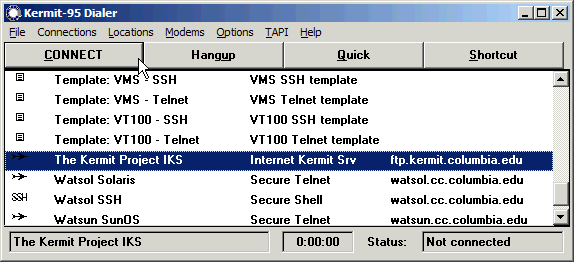
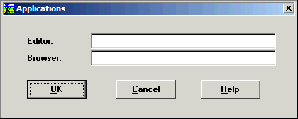

Manual by: Christine M. Gianone, Frank da Cruz, and Jeffrey Altman with updates by David Goodwin for Kermit 95 3.0+
Software by: Jeffrey Altman, Frank da Cruz, David Goodwin, Thomas Wu, and Max Evarts
Software version: 3.0.0 DEV, 2024
Copyright © 1996, 2003, Trustees of Columbia University in the City of New York. Previously Copyright © 1996, 2003, Manning Publications, Greenwich CT. Copyright assigned to Columbia University 30 March 2011. Converted for Web 30 March 2011. Last update: unknown
First Printing: September 1995
Seventh Edition: 1 January 2003
Revised periodically since then.
Kermit 95 is built from the file-transfer and scripting portions of C-Kermit ("The world's most portable communications software") plus custom Windows and OS/2-specific modules for serial and network communications, keyboard and mouse handling, terminal emulation, and system service access, plus its own point-and-click graphical connection manager ("Dialer").
Newcomers to K95 are invited to begin by reading the relatively short Kermit 95 Tutorial.
The documentation for Kermit 95 consists of the following parts:
This edition of the Kermit 95 manual is maintained as part of the open source Kermit 95 project and updated for each release. It supersedes the printed first edition of 1995 and all previous electronic editions. It is to be read with a Web browser such as Firefox, Edge or Chrome. This edition documents Kermit 95 3.0.0 DEV.
This manual is written in no-frills HTML, readable by any browser that follows the HTML 1.0 specification plus tables. It includes quite a few screen shots. If you find that this makes it take too long to load into your browser, disable "Load images automatically" in your browser's options.
The navigation links [Next] and [Previous] are context-sensitive. At the top of a chapter, they refer to the next and previous chapter. At the top of a section within a chapter, they refer to the next and previous section, and so on. [Top] brings you back to the main table of contents. Others, like [Chapter Contents] and [Section Contents], should be self-explanatory. Whenever you follow a link, you can use your Browser's Back button to return to your previous context.
Christine M. Gianone
Frank da Cruz
Jeffrey Altman
Max Evarts
The Kermit Project - Columbia University
New York City
August 1995 - October 2002
Visit the Kermit Project Website at http://kermitproject.org/.
Kermit 95, "K-95" for short (and "K95" for shorter), is a full-featured, high-performance, native, 32-bit communications software package for 32bit and 64bit versions of Microsoft Windows and IBM OS/2 offering:
For an overview of the packaging, system requirements, installation, directory layout, and new features of the latest version of K95, see the README file.
Kermit 95 is primarily for accessing text-based computers and services by dialup, direct serial connection, or network. Kermit 95 is like a VT100 terminal (or any of the dozens of other terminals that it can emulate), but with the added ability to transfer files back and forth and to automate any or all phases of a communication session, plus numerous comforts like key mapping, screen scrollback, and color selection. On the Internet, K-95 is a Telnet, Rlogin, FTP, and HTTP client with the ability to make secure connections. In Windows (not OS/2), it is also an SSH client. Furthermore, since Kermit 95 runs in a window of your PC desktop, it can interact with other PC applications by copying and pasting, clicking on "URL hotspots", and so on.
What is a text-based service? The best way to explain this is to list some examples:
Unlike graphical services such as those you access with Web browsers like Firefox or Internet Explorer, text-based services communicate and display only characters (not images or pixels), and (in general) display them in only a single font and size.
Contrary to what you might read in the popular press, text-based services are very much alive -- in corporations, universities, hospitals, government agencies, laboratories -- due to their stability, ease and universality of access, ease of automation, openness, long history, and wealth of applications (EMACS, VI, EDT, EVE, and other text editors; Pine, MM, and other e-mail programs; TeX, Scribe, Troff, and other text formatting/typesetting systems; rn, trn, tin, and other news readers; Lynx, IRC, Telnet, FTP, the many standard UNIX "building block" utilities, bibliographic databases and online library catalogs, legal/medical databases, statistical packages, math/scientific packages, compilers, system and network administration tools, and so on, plus countless custom text-based data entry / inquiry, office, and other applications). Kermit 95 is the perfect way to access this "world of text" from your PC.
Since Kermit 95 2.0 (June 2002), K95 has been available with both a Graphical User Interface (GUI) (available for Windows only) and a Console-mode interface. In this document, we refer to the GUI versions of K95 as K95G. Most of the features of the GUI and Console versions are the same; the following table summarizes the differences:
Feature GUI
NT 3.51/95 or newerConsole
Win9x/MEConsole
NT/2000/XPKermit Menu Yes No No Kermit Toolbar Yes No No Scrollbars Yes No No Font Selection Yes No Limited Multiple Scripts Yes No Limited Save Font Preferences Yes No No Stretch Screen Dimensions Yes No No Stretch Font Size Yes No No Maximize/Restore Yes No No True Fullscreen No (*) Yes Yes True Underlining Yes No No Double High/Wide Characters Yes No No [x] Box Works Yes No Yes
(*) The Kermit 95 GUI can be maximized but normally the Windows Task bar is still visible.
In Windows, run K95.EXE either from a Command prompt or from Start → Run dialog on the Taskbar. In OS/2 execute K2.EXE from a Command prompt window or by opening the Kermit/2 program object in the Kermit/2 desktop folder.
Then you'll see a greeting and Kermit's prompt, which shows your current directory [in brackets] and ends with "K-95>" (the commands that you type are underlined, and you should press the Enter key at the end):
C:\WINDOWS> cd "Program Files\Kermit 95" C:\Program Files\Kermit 95> k95 (Greeting is printed) [C:\Program Files\Kermit 95] K-95> _
Now type Kermit commands to set up and get connected as you would in any other Kermit program, like MS-DOS Kermit or UNIX C-Kermit, as documented in Using MS-DOS Kermit or Using C-Kermit, and in Chapter 6 of this document.
The GUI version of K95 has the same appearance and feature set on all Windows versions except for Windows NT 3.50 where it is missing the toolbar and some GUI dialogs. Regardless of GUI or Console version, the following features have a minimum Windows version requirement:
To start K95 from a command window (such as CMD.EXE or PowerShell), type "start path\k95g.exe", where path is where the Kermit 95 is stored; for example:
start "C:\Program Files\Kermit 95\k95g.exe"(note that k95g.exe is the GUI version; k95.exe is the console version). Or, if the command window's current directory is your desktop, and you have a K95 shortcut on your desktop, you can go through it:
start "K95 GUI.lnk"There are doubtless many other wrinkles to this topic, but the main purpose for this section is presenting K95's command-line options: configuration or action commands that you can give in the same command that you start K95 with. Command-line options are given after the program name in the system command that you use to start Kermit (in this and the following examples, "start k95g.exe" should be replaced by the appropriate command as explained just above, e.g. 'start "K95 GUI.lnk"'):
start k95g.exe -i -s oofa.exetells Kermit to send (-s) the file oofa.exe in binary (-i) mode. For more details on Kermit 95s command line options, see Command line reference.
We hope that this manual, plus Using C-Kermit and the other material provided, will give you all the help you need to use K-95. If you have trouble or questions and you can't find the answers in the manuals, begin by looking in the Bugs List, which describes all known problems in or affecting Kermit 95 as of the release that you have.
If you are on the Internet (and have a modern browser handy), also look at the Github Issue Tracker which contains descriptions of problems discovered since this release.
If you still have problems or questions that are not addressed in the manuals or bug files, please check:
http://kermitproject.organd look in the Kermit FAQ (Frequently Asked Questions). Also look at the Kermit 95 FAQ:
http://kermitproject.org/k95faq.htmand the Kermit Project's general Technical Support page:
http://kermitproject.org/support.htmlAnd you can also ask a question on Kermit 95s Github Discussions page:
https://github.com/davidrg/ckwin/discussions
Or post on Kermits Usenet Newsgroup, though traffic tends to be very low these days:
comp.protocols.kermit.misc
This chapter has been removed.
Information about installing and uninstalling Kermit 95 has been moved to the README file and the Installation Notes file.
Contents:
Once you've completed the installation procedure, you can double-click on the K95 Dialer icon to bring up the K-95 Dialer window, or on the K95 GUI icon to start the GUI version of Kermit 95 (K95G), or (veterans only), the K95 Console icon to start the Console version of Kermit 95. When you first start K95G, here's what you see:
Don't panic. The main screen is black because there is no connection yet. The Dial button on the left of the Toolbar brings up the Dialer to make a connection for you. You can also type commands in the black window at the prompt (explained in Chapter 6). But usually you won't have to -- most of what you need is in the menus or on the Toolbar. In the next section we explain how to use these and other standard Windows features. But first, let's briefly show how to make a connection in the GUI version of K95. Just click the Dial (leftmost) button on the K95G Toolbar:
Then pick your destination and go. Here's what the final result might look like:
This example shows a terminal session to a Linux computer running the text-mode
Lynx Web browser. Of course, when you're just beginning, first you'll need to
set up the connections that you'll be using, which is the topic of the next
couple chapters. In case you couldn't make out the little Dial icon on the
toolbar, here's a larger version:
At the far left of the Title bar is the Title-bar icon, also called the Mini-icon, a tiny rendition of the K-95 icon. Clicking on it gives you the System menu, with Restore, Move, Size, Minimize, Maximize, and Close entries.
Here is a brief explanation of the Windows System menu (the OS/2 System menu is slightly different):
On the right you have three little boxes. From left to right:
You can bring any application into the foreground simply by clicking on any piece of its window that you can see peeking out from behind other windows (but be careful exactly where you click, because the clicking on a functional window element can have an effect; usually it's best to click on the middle of the Title bar). If you can't see it, you can bring it to the front by clicking on its Window button in the Taskbar, or by using Alt-Tab or Alt-Esc to rotate your applications in front of you, Lazy-Susan style, until the desired one is selected. (Hold down the Alt key, and press the Tab or Esc key repeatedly. Let go of the Alt key when you see the application you want.)
Most of the following are "toggles", which you turn on and off in the menu. Those with an ellipsis ( . . . ) lead to a small submenu. The menu is arranged alphabetically.
This is a special menu accessible by clicking on the window icon (Windows 95/NT 4.0+) or control box (Windows NT 3.x) in the top-left corner of the K95G window, or by right-clicking anywhere on the title bar. When the menubar has been hidden with SET GUI MENUBAR VISIBLE OFF, a number of important K95G menu items appear in the Window Menu alongside the usual items Windows places there such as Maximize and Close

(K95G Only.) Like the Menu bar, K95G's Toolbar is minimal yet highly functional. It consists of two buttons and four combo boxes:
The Toolbar gives you a capsule definition of what you see on the screen and a mini control panel for making adjustments:
If you find yourself rarely using the toolbar, you can hide it with the command SET GUI TOOLBAR VISIBLE OFF to get some screen space back.

(K95G only) The status bar at the bottom of the window is divided into six sections; from left to right:
If desired, it can be hidden with the command SET GUI STATUSBAR OFF.
If you have a telephone and modem, you can make and use dialup entries. If you have a TCP/IP network connection (either a direct connection to an Ethernet or other type of Local Area Network, a DSL connection, or Dial Up Networking), you can make and use network entries: SSH, secure Telnet, regular Telnet, secure FTP, regular FTP, and others.
Each entry has a name, a brief descriptive phrase, and a phone number or network address, with a little icon that tells which type of connection it is: network (a little airplane) or dialup (a little telephone), etc. But the real power of the Dialer is that behind each entry is an array of settings pages that let you customize every aspect of each connection: terminal emulation, screen size, colors, key map, character sets, file transfer protocol, network protocols, security policies, logs, ... Even the screen coordinates for the window if you wish.

Dialer entries come in several categories:
You can use Options..View to determine which kinds of entries are shown in the Dialer's main (white) window:
Unchecking Template results in in all the Template entries disappearing from the main (white) window.
Contents:
References:
The K95 Dialer keeps a database of connections, which you can modify by adding, removing, or changing entries. When you want to make a connection, the Dialer generates a command file, or script, composed of Kermit commands (as documented in Using C-Kermit) and starts the K95.EXE or K95G.EXE program (Windows), or K2.EXE (OS/2), telling it to execute this script.
You can start the Kermit 95 Dialer with the K95G Dial Toolbar button, or from a desktop shortcut or the Start menu if you elected these at install time, as well as from a command prompt or Start → Run box as K95DIAL.EXE in the K95 program directory. No matter how you start it, only one copy of the Dialer may be active at a time (the version 1.1.21 and later Dialer enforces this policy).
The Dialer can launch as many sessions simultaneously as your PC can handle. Each session is a separate instance of Kermit 95 running in a separate window, and is totally independent of the Dialer, except that some status messages can be passed back and forth. If the Dialer exits, the sessions are not affected. If a session exits, the Dialer is unaffected except that it knows the session is no longer active.
Remember, you don't have to use the Dialer if you don't want to. It is a convenience, not a necessity. Every Dialer dialog, checkbox, and radio button has regular Kermit commands lurking behind it, as documented in the C-Kermit book, supplements, and this manual.
Let's look at the K-95 Dialer window in more detail. We've seen standard Windows features and we tried the [CONNECT] button. What is all the rest?
The Status bar at the bottom of the Dialer window gives you several bits of information about your current connection (the one whose name is highlighted in the Dialer's main window): its name, how long you've been connected (this helps you adjust your online time to fit your budget in case you're paying by the minute), and at the right, a word or two about what's going on at the moment (Online, Disconnected, etc). The status bar is "read-only."
Directly beneath the Title Bar is the Menu Bar, with a series of menu items: the familiar File, Options, and Help menus, plus K95-specific items for defining and switching dialing locations and devices and (in Windows only) quick access to your TAPI configuration.
The File Menu
Why is this necessary? Because the rules for dialing a telephone number number change as you move from one calling area to another. For example, a telephone number in the USA might be dialed one way from within the same area code, another way from a different area code, yet another from outside the country, and still another from within a Private Branch Exchange. K-95 can handle all combinations as long as the phone number in given portable format and it knows your dialing location.
The Locations Menu has two choices, Change and Current. Here is a brief overview of how they work:
Each location has its own collection of Settings pages. The first page (General) contains a dropdown list of location names, with the current location showing and highlighted. All the other information on this page and the remaining pages pertains to the selected location. If you use the dropdown list to select a different location (by moving the mouse pointer to it and then releasing the mouse button), the information on the Settings pages changes to show the newly selected location.
CLICK HERE for details about the Locations menu.
The Modems menu item has only one option, Change. When you choose it, the Modem Definitions dialog appears. This lets you select or define a dialout device. The Name field is a dropdown list containing the modem devices known to Kermit 95. In Windows, these are initially the same as the TAPI devices (from the Modems item in the Control Panel), but you can add, delete, and change the definitions as you like. All of your TAPI devices are imported into the Kermit 95's modem definitions whenever you start the Dialer.
In Windows, Kermit 95 supports two kinds of dialout devices: TAPI and "physical". TAPI is Microsoft's Telephony Application Programming Interface, in which dialout devices are abstractions similar to Kermit 95's "modems", and are known by long descriptive names such as "Compaq Presario 56K-DF". Physical devices are known by a combination of the PC communications port device name, such as COM1, and the type of modem that is attached to it, such as Hayes-2400.
When the TAPI type is chosen, TAPI itself handles the dialing if Options..Dialing..TAPI Modem Dialing is checked. When any other type is chosen (i.e. a specific modem type on a specific COM port), or on systems (such as OS/2) that don't have TAPI, Kermit 95 does everything itself.
The Modem Definitions dialog includes three key fields:
The remaining items specify communication parameters, which normally need not be changed.
CLICK HERE for details about adding new modems.

In Windows, these items are picked up from the Registry if you leave them blank; therefore Windows users normally would not fill in this dialog.
References:
The K95 1.1.20-and-earlier Dialer included a "settings notebook" for each connection, with tabs for each category of setting. However as more connection types were added (SSH, TLS, Kerberized Telnet, FTP, ...) the notebook became too large for Windows 95/98/ME. So to accommodate all the new connection methods and parameters, the notebook was replaced by separate settings dialogs for each category: Terminal Emulation, File Transfer, Keyboard, Printer, Telnet policies, SSL/TLS, SSH, FTP, and so on, as described HERE.
Kermit 95 comes in two pieces: a graphical Dialer (K95DIAL.EXE) and a text-based command and communications engine (K95.EXE or K95G.EXE). The Dialer is a user-friendly "front end" for K95 in the normal Windows graphical style, complete with menus, toolbar, and numerous graphical dialogs. You can use the Dialer to define all your connections, and after that you can access them any time you want simply by clicking on them. But you don't have to use the Dialer at all if you prefer not to, which might be the case if you are already an experienced user of C-Kermit or MS-DOS Kermit.
Any additions, deletions, or changes that you make to the Dialer are saved automatically. Changes made to an entry in the Dialer while a connection to it is active do not affect the connection, only the next invocation of it. If you really want to make changes that are used only during one session, but are not saved, you can make them in the Command screen, which is introduced in Chapter 6.
To edit an existing Dialer entry, you can either:
Due to limitations of Windows 95, 98, and ME, there is no longer a method for flipping back and forth among an entry's settings pages; you have to open each page individually.
Contents:
There are two ways to add a new entry:
Here's what happens when you right-click an entry:
As you can see, a mini-menu pops up allowing you to Add a new entry, or to Clone, Connect to, Edit, or generate a script file or shortcut for an existing entry or template. (When you right-click a non-Template entry, the mini-menu also includes Connect, Shortcut, and if it's not a preloaded entry, Remove.)
As delivered, the Dialer includes the following templates, from which you can clone new entries:
Name Connection Terminal Backspace Description DEFAULT Any VT100 Delete No special settings, used by Add
The DEFAULT template is used by Add. It contains reasonable "default defaults" that apply to the most common kinds of connections (VT100 terminal emulation, etc). If you edit the DEFAULT template it changes the defaults for subsequent Adds. You can't remove the DEFAULT template; otherwise Add would not work.
Templates have a special icon (it's supposed to look like a form you would fill out). You can see the templates by themselves in the Dialer window by clicking on Options in the Menu bar, then choosing the View option, and then checking only the Template option (uncheck the other choices by clicking on them until their checks are removed).
If you will be Cloning from a non-Default template, pick the most appropriate template by clicking on it once to highlight it and then in the main menu choose Connections..Clone. Or right-click on the template and then choose Clone.
The remaining sections of this chapter describe each of the Settings pages.
Whenever you make a new entry by Adding or Cloning, you must fill out the General page to specify the essentials: the entry name, connection type, and address or phone number, and optionally some other information. The blank General page looks like this:
At the bottom are three buttons common to all Settings pages:
The connection types are:
NOTE: This is not Dial Up Networking, the Internet, TCP/IP, PPP, or any other kind of network connection. Instead, it is just like a direct serial-port connection, except with modems and a telephone connection in between. Before the Internet, this was the most common way to make connections between distant computers (or for that matter from a terminal to a computer), but nowadays this method is rarely used except by experts or old-timers, and modems are mainly used to make Internet connections (if this paragraph is gibberish to you, you probably won't need to make this kind of connection).
+1 (212) 555 1212 (Manhattan, New York City, USA)
+44 (171) 555 2121 (Central London, England)
Portable entries always start with "+" (plus sign). The number after the "+"
is the country code of the country where this phone number is (see Table
VIII-1 of Using C-Kermit, second edition). The number in
parentheses (if any) is the area code or city code within the country, and the
rest is the local phone number within that area. The advantage of
portable-format numbers is that K-95 can dial them from anywhere. Good for
travellers and their laptops. This is the format we have used in the
preloaded entries, which are intended to be used from anywhere.
To specify a dialing directory in the Kermit 95 Dialer, click on File in the main menu, then Directories, then Dialing. This brings up Dialing Directory Files dialog box:
Check Use Dialing Directories and enter the names of one or more files into the Filename(s) text box, separating multiple filenames by spaces (not commas). Use full paths to eliminate any confusion. Feel free to make use of K95's various path variables to stand for Windows long pathnames.
Network directories are specified in the same way, except choose Network rather than Dialing in the File..Directories menu.
ftp.kermit.columbia.eduOr you can use the numeric IP host address, which always consists of four numbers (255 or less) connected by dots:
128.59.31.95Each Internet address might offer lots of different services, which are selected by a service name or number. For K-95, the default service is called Telnet -- which is the name of the Internet protocol for making an interactive terminal connection to the specified place. The service (port) number for Telnet is 23.
If you want to specify a different service name or number place the value into the port field, for example:
Address: ftp.kermit.columbia.edu port: 1649This used to be the Kermit Project's Internet Kermit Service at Columbia University (no longer active). If you omitted the port number in this case, you would have got the default service, 23 (TELNET), resulting in a login prompt, but most likely you would not have been able to get any farther than that, since most people didn't have login IDs on the Kermit server machine.
Kermit tries its best to determine which Internet protocol (e.g. Telnet) should be used based upon the service name or number. There are times when it is necessary for you to give Kermit a hint. That is what the Protocol listbox is for.
Protocol Port Description default Kermit chooses a protocol based upon the port raw socket (any) No protocol telnet (with negotiations) 23 Telnet protocol, Kermit initiates negotiations telnet (without negotiations) 23 Telnet protocol, the Host initiates negotiations rlogin 513 Rlogin protocol ek4login 2105 Encrypted Kerberos 4 Login ek5login 2105 Encrypted Kerberos 5 login ssl 443 Connect with SSLv3 telnet over ssl 992 Connect with SSLv3 then use Telnet telnet over tls 992 Connect with TLSv1 then use Telnet tls 443 Connect with TLSv1
As with phone numbers, you can also supply a name from your Kermit Network Directory, if you have one. The advantage, as with dialing, is that you can specify alternative addresses for the same network service, so if one of them is unavailable, K-95 tries the next, and so on. An additional advantage is that network directory entry names act like nicknames for hosts outside your own domain, that DNS could not resolve, or might take a long time to resolve.
The next few sections look at the remaining Settings pages so you'll know what's what in case you need to change things.
Finally, remember that the Settings pages are for setting up connections. You can't use them to change settings in connections that are currently active. That's what the Command Screen is for. TIP: If SET commands must be executed before a connection is made, include them in a keymap script.
Terminal emulation is one of Kermit 95's most important jobs.
CLICK HERE for an explanation of terminal emulation.
Many people use a terminal emulator all day, every day, and they want it to be not only fast and accurate, but also customizable in every detail of appearance, behavior, and keyboard layout. Kermit 95 comes equipped with one of the fastest and most accurate and flexible terminal emulators available anywhere, adding many features to those of the original terminal:
Kermit 95 emulates about 40 different kinds of terminals; CLICK HERE for a complete list.
This section tells you how to fill in the Terminal Emulation Settings page, but it does not tell you how to use the terminal emulator; that's what Chapter 7 is for.
Each kind of terminal has different capabilities, and different kinds of terminals are likely to have different escape sequences that are incompatible with each other. So if the other computer's idea of what kind of terminal you have is not the same as the one K-95 is emulating, the result will be misformatted screens -- things in the wrong place, funny squiggly characters where you expected to see boxes, and so on.
The key to successful terminal emulation is to make sure the emulator is set to the same terminal type that the computer or service thinks you have.If you don't know what terminal type to choose, follow these guidelines:
Note that you probably have some choices on the host too. In UNIX, for example, you can select from many different terminal types (those supported by the UNIX termcap or terminfo mechanisms) by setting your TERM environment variable to the name of the desired terminal type. In VMS, you can use the SET TERMINAL /DEVICE=xxx command. And so on.
To select the type of terminal that K-95 should emulate on this connection, highlight its name in the Terminal Type list in the upper left of the Terminal page. Since K-95 emulates so many kinds of terminals, you might have to use the scroll bar to locate the one you're after. As soon as you highlight a terminal type, its characteristics are filled in on the page, but you can change them. Remember: choose the terminal type first, then make any changes afterward. The other items on the page are:
24 × 80 42 × 80 49 × 80As noted, ANSI terminal types add an extra line by eliminating the status line. In this case the common dimensions are:
25 × 80 43 × 80 50 × 80
The colors that will be used are shown in the little boxes. To change them, just click on a box's arrow button to reveal a scrollable menu, and choose a color from the menu by clicking on it.
Here you choose the file transfer preferences for this connection. As with terminal emulation, these settings are made when you start the connection. You can always change them later during the connection if you want to, but you have to do that in the Command screen (Chapter 6).
This page specifies and configures the file transfer protocol to be used across terminal connections (dialup, Telnet, SSH, etc). FTP connections, of course, use FTP protocol, which has its own page.
Use Custom when tuning your file transfer parameters according to Chapters 9-12 of Using C-Kermit. This "ungrays" the packet length, window size, and unprefixing selections so you fine-tune them.
For XMODEM and YMODEM protocol the packet length applies in the sending direction; 128 and 1024 are the possible values (others may be given, but only 128 and 1024 are used). For ZMODEM, which does not have packets per se, the packet length is the ZMODEM "window size".
YMODEM and XMODEM never prefix control characters, and so are likely to run into trouble on non-transparent connections. In Kermit 95, ZMODEM follows the same rules as Kermit protocol.
This page is for customizing the serial communications settings for this connection. The use of this page depends on the connection type. For dialup connections, it lets you choose a particular modem device for this connection only, in case you have more than one, and possibly to override its settings from the File..Modems menu. Normally this page indicates the DEFAULT modem device and all the other options are grayed out, and normally you can leave it that way, with the possible exception of the parity setting. For a direct serial connection, this page specifies which device to be used, and lets you set the appropriate parameters.
The selections are as follows:
The remaining show list the serial communication and modem settings in effect for the device you have chosen. Here we see all of that bewildering Data-Communications-101 mumbo jumbo. If you don't understand it, but want to, then you can pick up a good working knowledge by reading Appendix II, "A Condensed Guide to Serial Data Communications," of Using C-Kermit. For dialup connections each item is dim unless you check the Override box next to it, which allows you to change it for this connection only. For direct serial connections you must specify each of the parameters:
Kermit 95's Telnet protocol implementation is quite advanced. It includes the following features, which are used automatically if the TELNET server on the other end of the connection also supports them:
The Telnet Settings page allows configuration of Telnet negotiations and TCP/IP options for each of your Telnet connections.
CLICK HERE for a description of Kermit 95's Telnet functionality and hints to work around various problems you might experience when connecting to hosts on the Internet.
Accepting an option means that if the Telnet server sends an option negotiation and Kermit 95 is able to negotiate it, that Kermit 95 will negotiate it. When refusing an option, Kermit 95 declines any negotiation attempt for the option. When requesting an option, Kermit 95 initiates the negotiation for the specified option. When an option is required, Kermit 95 initiates the negotiation and drops the connection if the negotiation fails.
NOTE: SRP (and Kerberos if the Auto-Get TGT feature is in use) requires a password. Kermit 95 uses the password (if any) entered on the Login Page; if none is entered, you can check the "Prompt for password" box, and the Dialer prompts you for a password. If you want to be prompted for the password in the K95 session itself, leave the password field blank and the box unchecked. For details about secure authentication, CLICK HERE.
Telnet options can be negotiated successfully only if the option is supported by both the client and the server. Some of the modern telnet options might not be supported by the default telnet servers that ship with commercial operating systems. These include Authentication, Encryption, and TLS.
By the way, K-95 comes with a TELNET.EXE program that is simply a little stub that runs K-95 as if it were TELNET. So if you like K-95 better than TELNET (who wouldn't?), you can install our TELNET.EXE in place of the regular one and then whenever you say "telnet somewhere," you'll be doing it with K-95. Not only that, programs such as Web browsers that use TELNET will be using K-95 without needing any changes, and without knowing a thing about it.
SSH connections are available only in the Windows version of K95; the OS/2 version can not make SSH connections.
If you leave the page in its default state (the one shown in the figure), you can make SSH connections by entering your password locally.
If you want to fill in this page, but don't understand the terminology, you'll need to read the Kermit 95 SSH Client reference.
The four list boxes allow you to specify authentication methods, ciphers, and so forth. By default, all of them are enabled. You can change the selections by clicking the mouse. If you click on a selected item, it is deselected, and vice-versa.
CLICK HERE for further information on K95's FTP client.
The TCP/IP Settings Page lets you set parameters for the TCP/IP network and transport protocols that underly Telnet, FTP, SSH, and other network application protocols:
Reference: Kermit Security Reference
This section is only for institutions using Kerberos security. In most cases, end-users at such institutions are supplied with preconfigured secure connections. Average users are not expected to understand this section or configure secure connections without assistance from organizational network administrators.
Kerberos is a network authentication protocol designed to provide strong mutual authentication for client/server applications using secret-key cryptographic algorithms. Kerberos was created by the Massachusetts Institute of Technology and has been integrated into numerous applications and operating systems. There are two versions of the Kerberos protocol. Kermit 95 is capable of supporting both.
The Kerberos Page lets configure Kerberos so Kermit 95 can use it to authenticate you to the host for this connection. Check with your system administrator to determine which Kerberos version should be used and values to use for Principal and Realm.
Reference: Kermit Security Reference
This section is only for institutions using SSL/TLS security. In most cases, end-users at such institutions are supplied with preconfigured secure connections. Average users are not expected to understand this section or configure secure connections without assistance from organizational network administrators.
The Secure Sockets Layer (SSL) and Transport Layer Security (TLS) protocols are quickly becoming a standard way of securing connections between clients and servers using Public Key cryptography for authentication and encryption services. Authentication takes place through the exchange and verification of X.509 digital certificates that represent the host machine and (optionally) the end user. The X.509 certificates contain a public key; a subject name identifying the certificate; an issuer name specifying the issuer's certificate; and a variety of information specifying how the certificate may be used. Certificate verification is performed in three steps:
The items on this page specify the locations of the CA certificates, the CRLs, and the optional client certificate and matching private key, as well as restrictions on the SSLv3 or TLSv3 ciphers to be used and whether certificate verification should be required.
Perhaps the most puzzling and frustrating aspect of online communications is knowing what key to press to do so-and-so. That's what the Keyboard Settings page is for.
First of all, note that most keys work as you would expect them to. The A key sends the code for the letter A, the 8 key sends the code for the digit 8, the "/" key sends the code for slash. The confusion comes in when we try to use special keys like Backspace, Up-Arrow, or F7. What should they send? Different computers, services, and applications expect different codes from these keys. That's what the choices on the Keyboard page are for.
You can also write your own custom key map, and you can even have a separate one for each connection. To specify a special key map for this connection, choose "Read from File" rather than "Default for Terminal Type", and then supply the name of the key map file in the text box (or click on Browse for a regular file dialog box). The text box displays the contents of the keymap file, if any, so you can refer to it during your terminal session. You can also type commands directly into the text box; this is similar to text box on the LOGIN page, except these commands are executed just prior to the SET HOST or SET PORT command.
Key map files are plain-text files that you can read and edit, consisting of a series of SET KEY or SET TERMINAL KEY commands, as explained in Chapter 7.
Remember that the Dialer Settings pages are for setting up connections. Changes made to these pages while a connection is active have no effect until a new connection is made.
As veteran online people know only too well, there are often many steps involved in connecting to another computer or service. The Dialer does the first step for you: dialing the phone and checking for a successful connection (or making the network connection).
But what happens when you get there? Usually there is at least a login and password prompt. Sometimes there is a menu to select a specific service. Sometimes you have to negotiate your way through a maze of terminal servers, switches, and other devices before you even get to the login prompt. Usually the procedure is the same each time for each service, and therefore repetitive and boring if done often enough. But if you access a service rarely, you might forget the procedure and spend hours hunting for that scrap of paper where you wrote down the tedious and intricate access procedure.
That's what computers are good for. They can remember the procedure for you and even execute it so you don't have to. The downside of this is that the procedure for doing this is recorded in a computer program. In our case, it is written as a script in Kermit language, rather than Basic or C or Fortran. You can learn all about writing Kermit scripts in Chapters 17-19 of Using C-Kermit. In the meantime, let's just tell you what this page is for.
If you have a script to automate logging in to this service, and you have stored it in a file on your PC, and you wish to use it: check the box marked "Script file name" and write the name of the file in the space provided, or use the Browse button to find the file with a dialog box.
If you don't have a script, you can try the LOGIN.KSC file from the Kermit 95 SCRIPTS subdirectory, which works on most normal UNIX, VMS, and similar computers that have a user and password prompt (but no guarantees!). If it does not work copy the script file and edit it for your host.
Then fill in the other boxes as follows:
When you specify a script file, its contents may be reviewed in the text box. If you do not specify a script file, the text box can be edited directly to specify script commands that should be executed after the connection is made successfully.
To choose a printer, click on the little arrow in the Printer Type list box and highlight the desired printer type. If you have chosen Windows queue, then the Windows Printer Queue Name list becomes ungrayed and you can select the desired Windows queue from the menu.
If you choose DOS device, file, or pipe, you can select a DOS device from the DOS Printer device or file name list box. If you choose file or pipe, simply type in the full name of the desired file, or the full pipe specification, into the blank space in the same list box. When entering a pipename, you don't need to put the "|" symbol. If your printer is serial device you can specify the speed, parity, and flow control.
If you want your print jobs to be preceded by a header page, enter its full filename in the next box; otherwise leave the box empty. Note that the "header" page can be any old text, possibly with your name on it (useful for shared printers), or it can be some kind of device-specific information to load into the printer to configure it as you desire. K95 doesn't care what is in this file, it just sends it to the printer.
If you want K95 to send a formfeed at the end of each print job, check the Send Form Feed box. Sometimes this is necessary to force out the last or only page of the print job. Or, if something other than a formfeed is needed, enter it into the End-of-Job String box using regular Kermit notation for strings (backslash notation for control characters, etc).
Sometimes print jobs can be sent in such a way that each line or page becomes a separate print job on your PC. For example, if the host intersperses print material with progress reports for the screen. You can work around situations like this by specifying a timeout value greater than zero. The timeout determines how long Kermit 95 waits before assuming that the print job is complete.
A bidirectional printer is a printer (or other device, such as a barcode scanner) that accepts data from the PC (like a regular printer) but also sends data back to the PC. If your printer is bidirectional (or serial) you can check the Bidirectional box if you have chosen the DOS printer type; otherwise this box is grayed out. Data sent from the printer to the host is sent as if it was typed on your keyboard.
If your printer requires Postscript, check the Output text as Postscript button and specify the width (in characters) and length (in lines) of the printed page.
CLICK HERE for technical details on Kermit 95's printer support.
The K95 2.x Dialer has a new GUI settings page, shown below. Each connection can have its own separate GUI settings.

The items on the page are:
Log files are selected on the Logs page. Normally you would not check any of these, especially not the debug or packet logs, which are used only for debugging and can become very large very fast.
Check Log Connections if you want to record each time you connect to the service specified on the The General Page of this entry.
Check Log Debugging Information if you need to generate a debug log to assist Kermit Tech Support correct a problem you are having with Kermit 95.
Check Log Kermit File Transfer Packets if you need to generate a packet log to assist Kermit Tech Support in understanding the cause of a unexplained file transfer failure.
Check Log Session Input if you want to record your entire terminal session. Session logs record every byte of data that Kermit 95 receives from the host. If you suspect there is a bug in Kermit 95's terminal emulation create a Binary session log and Kermit Tech Support can use it to replicate your session. Text logs remove CR, NUL, and XON/XOFF characters from the logged data. Debug logs contain all of the data stored in the Binary logs but leaves in the negotiations and NVT processing of Telnet connections.
Check Log File Transfer Transactions if you want to keep a record of all your file transfers. Normally, this selects the verbose-form (human-readable) transaction log. If you want the brief form (one line per file, comma-separated fields, suitable for import into a database or spreadsheet), check the Brief Format button.
For each log check the Append box if you want newly opened logs to be appended to existing ones; uncheck it if you always want to overwrite existing logs of the same name. The same log file can not be shared by more than one copy of Kermit 95 at the same time.
References:
Contents:
When you start a connection successfully from the Dialer, you get a Terminal window in which you can interact directly with the computer or service you have contacted to. The Dialer has taken you to your destination, but now you're on your own.
If your connection is working as expected and you don't need to transfer files, then you probably don't need to read this chapter or Chapter 8. Otherwise, you'll have to learn how to call up the K-95 command screen, how to give commands to it, and how to switch between the Command screen and the Terminal screen.
As we told you in Chapter One, you can issue commands to K-95 without using the Dialer windows and/or menu options at all. You can also issue commands after the Dialer has made the connection for you.
The Dialer is nothing more than an organizer for Kermit commands. It groups them together according to "topic" and lists the possibilities right in front for you, making it easy to set things up. A window pops up; you select an item from the choices, or fill in a value, and then click [OK] (or [Save/Next]) to accept your choices or [Cancel] to change your mind. For example, when you set your terminal type to "VT102" in the Terminal Settings page, it's the same as giving the following Kermit command:
K-95> set terminal type vt102
The Command screen and the Terminal screen share the same window, called the Kermit window. The Kermit window shows only one of these screens at a time.
When you are in the Terminal screen, you are communicating with the other computer that you have connected to. When you are in the Command screen, you are giving commands to K-95 itself on your PC.
Since you have only one keyboard to talk with both your own PC and the computer or service you have connected to, you need a way to switch between the two. Here's how:
An alternative method for escaping back is with K-95's "escape character," which is Ctrl-] (hold down the Ctrl key and press the right-bracket (]) key), and then press the letter "C" key. In fact, the escape character allows a number of different characters to be typed after it, as one-key commands. You can see what they are by typing Ctrl-] and then question mark (?). You can change K-95's escape character with the SET ESCAPE command, and you can disable and eliminate it altogether with SET TERMINAL ESCAPE DISABLED.
K-95's prompt shows your current directory. One of K-95's commands is CD, meaning CHANGE DIRECTORY. See how the prompt changes when K-95's directory is changed:
[E:\LETTERS] K-95> cd nice [E:\LETTERS\NICE] K-95> cd ../angry [E:\LETTERS\ANGRY] K-95>
That's just one of hundreds of commands. Others, like:
[E:\LETTERS\ANGRY] K-95> set terminal color term lightred black
. . . have lots of words. But the words usually make some kind of sense. In the example just above, since we are about to write an angry letter, we set the colors of our terminal screen to bright (light) red on black, to match our mood.
Using C-Kermit describes the Command screen in great detail. But it is worth repeating a few of the basics before we go on. Commands:
K-95 has literally hundreds of commands, built up over the years to handle almost every conceivable situation. K-95's commands can be used to:
In this manual we only touch on the bare essentials of the Command screen -- the minimum you need to know to be able to use K-95 in common situations. You can find a brief tutorial HERE. Using C-Kermit tells all.
Well, almost all. Of course Kermit 95 has more than a few commands of its own that are not documented in the book because they apply only to Kermit 95; those commands are documented in this manual.
The Command screen also has some properties that might not be immediately obvious from its drab appearance:
And of course you can copy, paste, and so forth. Scrollback is explained in Chapter 7, but it is worth noting here that the Command screen has its own scrollback buffer, distinct from the Terminal window.
Finally, it is important to note that Kermit's command language is the same as its scripting language. If you can type commands in the Command window, you can write scripts (with the help of Chapters 17-19 of Using C-Kermit). Furthermore, Kermit's script language is consistent across many platforms, including DOS, Windows and OS/2 (of course), plus VMS, all varieties of UNIX (Linux, HP-UX, AIX, Solaris, etc), AOS/VS, Stratus VOS, and many others. Learn it once, use it everywhere. If you are connected to the Internet, ClICK HERE for a brief tutorial and lots of examples.
The procedure for entering and editing commands is given in Chapter 2 of Using C-Kermit. It must be noted here, however, that C-Kermit's command parser is portable; it was not designed specifically for PCs. Therefore, the editing keys of the PC keyboard can not be used to edit commands. Instead, use the keys listed in the book:
Many of the Alt-key combinations that work in the Terminal screen, which are documented in Chapter 7, can also be used in the Command screen. For example, Alt-H pops up a little Help menu, Alt-P prints the current screen, and so on.
The RUN command lets you execute a Windows (or OS/2) command or program from the Kermit 95 prompt (or from a K95 command file, macro, or any other command source). Examples:
K-95> run notepad oofa.txt ; A GUI program K-95> run ipconfig ; A console program K-95> run dir /p ; A "DOS" command
Most Kermit programs have RUN commands, but several aspects of Kermit 95's are special:
K-95> run start notepad oofa.txt ; A GUI program K-95> run start ipconfig ; A console program K-95> run start dir /p ; A "DOS" command
K-95> run budget.doc ; Starts Word or WordPad K-95> run clouds.jpg ; Displays a photograph K-95> run office.ksc ; New copy of K95 executes this script
K-95> pty cmd ; Open the windows console K-95> pty powershell ; Open powershell K-95> run cmd /c dir && pause ; Run a "DOS" command (dir) then wait for a key press
Note that as PTYs are a type of connection, trying to switch back to connect mode after the command has finished will cause Kermit to "reconnect" which in this case really means running the command again! So if the command is something you wouldn't want to run accidentally (like deleting a file), you might not want to run it via a PTY.
This fourth property is especially handy on terminal connections. For example, suppose somebody sent a .DOC (Microsoft Word) enclosure to your Unix-based host e-mail account, where you can't read it. You save the enclosure on your Unix disk, download it with Kermit, and then just tell K95 to RUN it; Windows automatically invokes the associated application on the data file. Ditto for spreadsheets, photos, audio or video clips, you name it. (But on the downside, opening enclosures received in e-mail is the most common way to infect your PC with a virus.)
K95 has tons of other commands too. One class of commands you might find particularly useful is its DOS-like commands, mainly for managing files: DIRECTORY, DELETE, MKDIR, FIND, and so on. These are generally more powerful and more friendly than the equivalent commands in the Windows (or OS/2) Command window, to the extent that you might find yourself using K95 as your Windows (or OS/2) shell: you can abbreviate K95 commands, use completion on them, recall them, get context-sensitive help with "?", and so on.
Here's a side-by-side comparison of common "DOS" commands on the left and K95 on the right. Slanted square brackets enclose optional fields. Italic words are parameters that you would replace by actual values, for example "disk-letter" might be replaced by "C". In case you are wondering why Kermit commands are not identical to DOS commands, it's because (a) Kermit runs on many platforms, not just Windows, and tries to maintain common syntax in all versions, and (b) Kermit predates both DOS and Windows.
Windows Command K95 Command disk-letter: disk-letter: or CD disk-letter: CD directory CD [[disk:][directory]] CD .. CDUP or CD .. CD PWD (none) KCD symbolic-directory-name (none) BACK
Notes: In K95, CD given with no operand returns to the default or home directory, whereas in DOS it prints the name of the current directory. Unlike in DOS, a disk letter can be included in K95's CD command. Use PWD to display the current directory. K95 also has a BACK command to return to the previous directory, and KCD to change to various symbolically named directories, like DESKTOP (more about this in the README file). Type HELP CD at the Kermit command prompt for more information.
Windows Command K95 Command CHKDSK [disk-letter] SPACE [disk-letter]
Note: K95's SPACE command doesn't check the disk; it shows how much space is used and free without checking the disk. CHKDSK is a true DOS command, not available in most Windows shells.
Windows Command K95 Command COPY [options] source dest COPY [options] source dest
Notes: K95 COPY has more options, including some you might not expect, like for Base64 encoding and decoding, byte-swapping, etc. K95 also has a TRANSLATE command, which is like COPY, but it converts the file's character set. HELP COPY and HELP TRANSLATE for more information.
Windows Command K95 Command DATE DATE [date]
Notes: K95 DATE does not set the date, it only shows it (and the time). If you give it a date or time or date-time operand (in almost any format), it gives it back to you in standard format. It can also be used to do date/time arithmetic, e.g. "date 1 january 2002 +1000days". HELP DATE for details.
Windows Command K95 Command DEL [options] filespec DELETE [options] filespec DELTREE [options] filespec DELETE /TREE [options] filespec DEL /S [options] filespec DELETE /TREE [options] filespec
Note: K95 DELETE has more options, including file selection by date and/or size, exception lists, etc. It can also delete selected or all files recursively (i.e. down through subdirectories), and therefore also stands in for DELTREE (DEL /S in newer Windows versions). HELP DELETE for details.
Windows Command K95 Command DIR [options] [filespec] DIRECTORY [options] [filespec]
Note: K95 DIRECTORY has many more options, including selection options, listing options, sorting options, and (like DOS DIR /S) can operate recursively. HELP DIRECTORY to read about all the options.
Windows Command K95 Command HELP [command] HELP [command] EXIT EXIT [ status [ message ] ] FIND [options] "string" file FIND [options] "string" file MORE file MORE [options] file PRINT [options] file PRINT [options] file PROMPT string SET PROMPT string RENAME source dest RENAME [options] source dest MKDIR directory MKDIR directory RMDIR directory RMDIR directory TIME DATE [date-and/or-time] TYPE file TYPE [options] file (none) HEAD [options] file (none) TAIL [options] file
Note: K95 TYPE has numerous options, governing paging, selection of lines, and even character-set translation. The K95 FIND command also searches for patterns, not just literal strings, and has many options, including recursive (subdirectory) searches, and can also be invoked as GREP (as in UNIX) or SEARCH (as in VMS). Type HELP for any of these commands (or any other command) for a description of the syntax and purpose of the command.
K95 also has all the capabilities of DOS Batch (in the following list, commands means one or more commands, separated by commas):
Windows Command K95 Command
CALL file [ parameters ] TAKE file [ parameters ]
ECHO text ECHO text
FOR var IN set DO command FOR var init final increment { commands }
GOTO label GOTO label
IF condition command IF condition { commands } [ ELSE { commands } ]
PAUSE seconds PAUSE seconds-or-time-of-day
REM COMMENT or ; or #
SHIFT SHIFT [ number ]
(none) WHILE condition { commands }
(none) SWITCH v { case-statements }
Plus lots more (command recall, keyword abbreviation, filename and keyword completion, context-sensitive help, macros, etc, plus the substantive features of K95 itself: serial and network connections, terminal emulation, file transfer, and so on.
Locus refers to the target of file management commands when Kermit has a connection to a server on another computer. Historically, commands such as CD, DIRECTORY, DELETE, RENAME, and MKDIR have always acted locally in all Kermit programs. To ask a remote server to do these things required a REMOTE or "R" prefix: e.g. REMOTE CD or RCD.
When the FTP client was added to Kermit in 2002, this behavior seemed unnatural to users of text-mode FTP clients. Thus the notion of Locus was introduced: Local means that unprefixed file management commands are executed on the local computer; Remote means they are sent to the remote FTP or Kermit server for execution. By default, Kermit switches Locus automatically every time you make or break a connection, depending on what kind of connection it is. When you make an FTP connection, Kermit switches its Locus to Remote. When you make any other kind of connection, or when you break any connection, its Locus switches back to Local.
Regardless of Locus, you can always force a file management command to execute remotely with an R-prefix: RCD, RDIRECTORY, etc. And you can always force it to execute locally with an L-prefix: LCD, LDIRECTORY.
In K95G, the current Locus is shown in the Status bar, and in all versions of Kermit 95 2.x and newer, automatic Locus switching is accompanied by a popup dialog or prompt, informing you of the switch and asking if it is OK. This is to make sure that you know where commands such as DELETE will be executed! If you would rather not be bothered by the popups or prompts, use the Actions menu to change the Automatic Locus Switching to On or Off, rather than Ask, or put the appropriate SET LOCUS command in your K95CUSTOM.INI file. Type HELP LOCUS at the K-95> prompt for details.
Several commands are useful in the command screen. You can issue them at the prompt, or you can put them in your K95CUSTOM.INI file (K2CUSTOM.INI in OS/2) or in a macro, or in various other ways as described in Using C-Kermit:
[C:\K95\] K-95> set command color ?
lists the foreground colors.
In K95G, the dimensions of the Command and Terminal screens are always the same and SET COMMAND HEIGHT and SET TERMINAL HEIGHT are synonyms, as are SET COMMAND WIDTH and SET TERMINAL WIDTH. In the Console version, the Command and Terminal screen dimensions can be distinct.
Other SET COMMAND commands are described in Using C-Kermit and by HELP SET COMMAND. The SET COMMAND values can be displayed with SHOW COMMAND.
You can use the mouse to copy and paste in the Command screen just as you would in the Terminal window. This means you can copy and paste pieces of previous commands and so forth, and perhaps more usefully, it means you can copy the results of commands and paste them elsewhere, such as into the Terminal window when you are sending email to Kermit Technical Support about some problem you are having.
At the K-95> prompt, you can recall previous commands by pressing the Up Arrow key, and if you go too far back, you can use the Down Arrow key to move forwards again. You can also use Ctrl-P or Ctrl-B in place of Up Arrow, and Ctrl-N in place of Down Arrow.
The command recall buffer size holds 10 commands by default, but you can change it with:
SET TERMINAL CURSOR FULL
Note, however, when starting a connection from the Dialer, the script that the Dialer generates is executed after the initialization and customization files. Therefore, any settings in the Dialer entry that clash with those in the initialization or customization files will take precedence.
When you make a connection from the Dialer, the commands generated by the Dialer are executed after your initialization and customization files, and therefore have the potential to undo them. For example, if your customization file sets small screen dimensions and certain Dialer entry sets large ones, when you launch that connection from the Dialer, it has large screen dimensions.
If you specify a key map script (which can, in fact, contain any commands at all, not just key mapping commands) in the Keyboard Settings page of a Dialer entry, it is executed just prior to making the connection.
If you specify a Login script in a Dialer entry, it is executed last.
References:
Contents:
Kermit 95 offers two kinds of connections: those that provide only command-level access from the Kermit client to the remote server:
and those that allow direct interaction with the remote host, its shell, and its text-based applications through K95's terminal emulator:
This chapter concerns the second kind of connection. As long as a connection is active, K95 is emulating a particular kind of terminal: when the Terminal screen is active, (almost) everything you type goes to the other computer rather than to your PC; what the other computer sends to your PC is displayed on your screen formatted according to the terminal type. Your PC screen becomes a window in the true sense, providing a view of another place that is outside your PC, with which you interact directly by typing on the keyboard and viewing the screen.
In addition to emulating a variety of terminals, K-95 offers you "value added" features beyond the capabilities of the original terminal:
Before proceeding, let's look at a gallery of K95 Terminal screen samples, captured from K95 1.1.21 and 2.0 on Windows XP. Click on any screen to see the full-size image. Most screens are 24x80, but of course K95 can also handle tall or wide screens. A few of the many user-selectable fore- and background color combinations are shown.
Reference: The Kermit 95 Terminal Type List.
The most important point to remember about terminal emulation is that the emulator (Kermit 95) and the host must agree about the terminal type. For example, if Kermit 95 is emulating a VT100, the host must know that you are using a VT100.
You can choose Kermit 95's terminal type in the K95G Toolbar, in the Dialer on the Terminal Settings page for any connection, or in the Command screen with the command:
SET TERMINAL TYPE name
where name is a name from Kermit 95's list of terminals that it can emulate (in other words, you can't just enter the name of any terminal at all and expect K-95 to know how to emulate it; you have to choose one that it knows). To see a list of the acceptable names, open the Terminal-type Combo box on the Toolbar and scroll through the list, or type a question mark (?) in the name field of the SET TERMINAL TYPE command in the Command screen:
K-95> set terminal type ?
Whenever you set or change terminal types, Kermit 95 loads a complete key map for the selected terminal (so the Arrow, Function, and other special keys send the expected sequences), and sets up the appropriate responses for incoming escape sequences.
The method for telling the host what kind of terminal you have depends on the host and the connection.
More about VMS . . .
You can always use VT320 terminal emulation with VMS. The VMS SET TERMINAL /INQUIRE command is essential for synchronizing VMS's terminal capabilities list with the capabilities of the K95 emulator. At most VMS sites this command is issued automatically when you log in. But if it isn't, then even when VMS knows your terminal type, it might print error messages like this:
%TPU-E-NONANSICRT, SYS$INPUT must be supported CRT
when you attempt to run fullscreen applications like EDIT/TPU. In that case, type "set term /inquire" yourself at the VMS command prompt, or add it to your SYS$LOGIN:LOGIN.COM file.
Let's take a look at a Terminal screen in action. Here we have a Telnet connection to the FedWorld BBS system of the US National Technical Information Service (fedworld.gov):
On top we have the Title bar. In the GUI version, all elements are functional: you can minimize K95G, restore or maximize it, and you can use the [x] box to exit cleanly.
The K95G menu bar has four items: File, Edit, Actions, Help. Each of these is simple and should be self explanatory; e.g. the File menu items are Connections (brings up the Dialer), Hangup (closes the current connection if any), and Exit. The Actions menu includes such items as Clear, Compose, Reset, and "toggles" for various important and/or commonly used dual-value (on/off) parameters.
The K95G Toolbar is a mini control panel for the terminal emulator. From left to right:
The Combo Boxes show the current choices for terminal emulation, font, and character set and let you change them.
The Terminal window itself contains the host BBS screen. The bottom line of the the Terminal window is Kermit 95's status line (not visible in all emulations or when the host application has disabled it.) The status line tells you, from left to right:
At the very bottom is K95G's Status Bar, which tells you which screen you're in, the current Locus for file management commands, the communications protocol (such as TELNET, SSH, or Serial), the current cursor position, and the screen dimensions, exclusive of the Status line.
To get a brief glimpse into the degree of control you have over the terminal emulator, use Alt-X (hold down the Alt key and press the X key) to return to the Command screen and give the SHOW TERMINAL command. That is, type:
show terminal
at the K-95> prompt and then press the Enter key:
This illustration shows the Console version as it appears in Windows 9x/ME, in which the Console window includes its own Toolbar. The terminal screen is bordered by a regular Windows / OS/2 border including Title bar, Max/Min/Close buttons, and Mini-icon access to the System menu. Note, however, that there are (or should be) no scroll bars.
In the Console version... Just below the Title bar is a Tool bar (Windows 95/98/ME only). On the left is your font size control. If the writing in the Terminal screen is too small for you, just click on the little arrow button to open up the font-size menu to pick a bigger size. Pick any size you want, even a teeny-weeny size and see the tiny little Terminal screen, just right for a mouse. In Windows NT/2000/XP/etc and OS/2, use the Font..." entry on the System menu. Warning: If you see an "Auto" entry in the font list, do not choose it. See Item 9 in the K95 Bugs List for details.
Note: Font changes made in the K-95 windows's Font box are only for the current session. Various tricks can be used outside of K-95 to force your preferred font size to be remembered.
Then comes the Fullscreen button (Windows 95/98/ME only). Click on this and the terminal screen fills up the entire PC screen. Oops, sorry, no more buttons to click on to get back to Windows! Now what? Hold down the Alt key and press the Enter key to restore the original screen (Windows only).
The next button in the Windows 9x/ME Toolbar is Properties. Click on this and you get a big fat notebook full of options (including another way to set the font size). You can safely ignore these. Then comes a Background button. If you push it, K-95 might not be able to execute except when it is up front. Finally, the button with the big A on it is the Font notebook, which is yet another way of picking the font size.
You can change the amount of the window that you can view by dragging the window frame, but you can not actually resize the window (but keep reading). If you reduce the viewable area below the maximum, vertical and/or horizontal scroll bars appear to let you move to the hidden portions.
The GUI version has its own Toolbar, and can be resized by dragging its window frame.
Like it says in the status line, use Alt-H to get help. That is, hold down the Alt key and press the H key (in most emulations you can use either lower case or upper case letters with Alt keys to invoke K-95 functions, but in some emulations, such as HFT, you must use upper case). In the GUI version, you can also use the menu: Help→Context. Up pops a window labeled "Important Keys":
These are some of the special keys that you can use during terminal emulation. We describe these keys and what they do in the following sections. Bear in mind, however, that you can redefine any keys any way you want. If you move important functions to other keys, the status line and pop-up help screens know this and they use the new key names.
Some pop-up help screens have additional pages. To see the next page, press Alt-H (or whatever you have defined the Help key to be) again; in the GUI version, just press the Space bar or click OK. To make a pop-up screen go away, press (almost) any key besides the Help key, or double-click the left mouse button; in the GUI version, use the Esc key or click Cancel.
The status line changes to different formats depending on your context. For example, if there is a pop-up help screen, the status line tells you how to make it go away. If the screen is rolled back, the status line says how far and how to get help about the scrollback keys. Which brings us to our next topic. . .
Reference: Advanced Scrollback Features
Don't you hate it when something that you are trying to read scrolls off your screen too quickly? Did you ever wish you could bring it back to read at your own pace? You can with K-95's screen scrollback feature.
Scrollback is simple and intuitive in the GUI version of K95 -- just use the vertical scrollbar or mouse wheel. You can also use the keys described in the following paragraphs, just as you can in the Console version:
Use the Page Up key to go up one screen page and the Page Down key to go down one screen page. If you keep pressing the Page Up key, you'll go farther and farther back in time, until you reach the top of K-95's "scrollback buffer". "Buffer" is one of those techo words; it means "a place to put things." The scrollback buffer is only so big, so when it fills up the oldest material is discarded off the top. The default size is 512 lines. You can specify a different size in the Dialer -- see Chapter 4 -- or with the SET TERMINAL SCROLLBACK command.
You can go straight to the top of the scrollback buffer by pressing the Home key. You can go straight to the "bottom" (i.e. Back to the Present) by pressing the End key.
The mouse wheel is also supported in both the GUI and Console versions of K95 allowing you to scroll one line at a time, or one screen at a time if you're holding down the Ctrl Key. The mouse buttons and wheel can be redefined if desired.
Notes:
The following screen shot shows a scrolled-back screen in the Console version, with the Console rendition of the popup help screen for scrollback keys:
The picture also illustrates the special message that goes into the Status Line (if there is one) as well as into the Title bar.
Now suppose a long document flew past and now you want to read it. Get to the top the fastest way -- a bunch of Page-Ups, or a Home and then a bunch of Page-Downs (you can even search for it if you wish) -- and then Page Down one page at a time as you read it.
You can also scroll backwards and forwards a line at a time. Just hold down the Ctrl key while pressing the Page Up and Down keys. In the GUI version, click on the little arrowheads at the top and bottom of the scrollbar runway.
While you are scrolled back, newly arriving material is still accepted and placed correctly where it belongs, so when you go back to the end, it is there waiting for you.
Remember that the scrollback keys, and any other keys, can be redefined. In certain terminal emulations, as noted previously, Page Up and Page Down are used to send commands to the host, rather than locally for scrollback. When in doubt, use the Help key (shown in the Status Line) to find out what the Scrollback key is. And then once scrolled back, use the the Help key again to find out which keys do what in this situation.
Kermit 95 also includes some advanced scrolling features: horizontal scrolling, searching, bookmarks, saving the scrollback buffer, and viewing defunct sessions. CLICK HERE to read about them.
The normal size for a terminal screen is 24 lines with 80 characters in each line (25 x 80 in ANSI emulations). These are the dimensions of most real terminals, and most computers and services expect your screen to be this size.
But 24x80 is a bad match for a sheet of paper, which usually has about 50 lines. Wouldn't it be nice if your terminal screen did too? Similarly, old timers might remember those big, heavy, and (most of all) WIDE green-striped computer printouts with sprocket holes on the sides. They were 132 characters wide, which is much wider than the normal 80-character screen line. There is still a lot of software that generates these wide printouts, and wouldn't it be nice if we could view them on our terminal screens?
You can also maximize and restore the K95G window using the the middle button at the right of the Title bar. Maximize (clicking the button when it contains a single box) expands the K95G window to fill the whole screen, adjusting the screen dimensions or the font size (according to your Resize Mode setting in the Action menu) to achieve the best possible fit. Restore (clicking the button when it shows two boxes) puts the K95G back as it was before you maximized it, except that usually the restored is blank since it is shorter than the maximized screen, so the previous contents went into scrollback.
The terminal dimensions (rows × columns) are shown in the rightmost position of the status bar. If the terminal window includes a Kermit 95 status line, this line is not included (since it is not part of the terminal).
The screen dimensions for each connection can be set in the entry's Terminal Settings page in the Dialer, as explained in Chapter 5. You can also use Kermit 95 to set or change them, independent of the Dialer.
The commands to choose the screen height and width are:
SET TERMINAL HEIGHT number SET TERMINAL WIDTH number
These commands accept any numbers at all, within reason, when typed in K-95's Command screen.
resize
or something like:
stty rows 49 cols 80
and in VMS it is:
SET TERMINAL /WIDTH=132 /PAGE=60
Reference: Using C-Kermit, Appendix I.
"Byte length" refers to the number of significant bits in a byte: 7 or 8. Note that bytes might or might not correspond with characters. In character sets like ASCII and ISO Latin-1, one byte is one character; in others like JIS X 0212 or Unicode, one character might be composed of two or more bytes.
By default K95's terminal screen uses the appropriate character size for the terminal it is emulating: 8 for VT220 or higher, 8 for any ANSI-based type, 7 for most others. The 7-bit setting is to protect you in case the host uses parity, a commonly-used scheme in which one bit of each byte is used for error detection rather than data. If you display bytes with 7 data bits and 1 parity bit as if they contained 8 data bits, your screen would be full of garbage.
But you might need 8 data bits because you will be using an 8-bit character set on the host for representation of accented or non-Roman characters, line- or box-drawing characters, or math/technical characters. If your terminal bytesize is 7 in this situation, much of the text on the screen will be legible, but special characters will be garbled and the formatting might be fractured. To use eight data bits in the terminal screen, give the K95 commands:
SET TERMINAL BYTESIZE 8 SET PARITY NONE
Kermit 95 1.1.21 and later also support the rather rare combination of 8-bit data bytes with one parity bit. The command for this would be:
SET TERMINAL BYTESIZE 8 SET SERIAL 8E1 ; or other
The SET SERIAL command, which also lets you choose the number of stop bits, is documented HERE.
(Click to enlarge)
Kermit 95 has the screen elements shown in the following table, and you can choose the coloration for each separately. The default values shown might vary according to the terminal type; e.g. for ANSI and Linux emulations, the default Terminal Screen is white on black. Of course you can also specify your color scheme for each connection in the Dialer on the Terminal page.
Element Default
ForegroundDefault
BackgroundCommand Command Screen White Black set command color Terminal Screen Lgray Blue set terminal color terminal Status Line Lgray Cyan set terminal color status Popup screens Lgray Cyan set terminal color help Selection Black Yellow set terminal color selection
You can also set custom colors for various terminal display effects, including debugging, reverse video, underlining, etc, as described HERE.
The Console version of K95 is limited to 16 colors, listed in the following table:
Name Description Intensity black Black Normal blue Blue Normal brown Brown Normal cyan Cyan Normal dgray Dark Gray High green Green Normal lightblue Light Blue High lightcyan Light Cyan High
Name Description Intensity lightgray Light Gray Normal lightgreen Light Green High lightmagenta Light Magenta High lightred Light Red High magenta Magenta Normal red Red Normal white White High yellow Yellow High
A color-setting command should include the foreground and the background color, in that order. So to specify a black-on-white Terminal screen with a white-on-cyan status line, use:
set terminal color terminal black lgray set terminal color status white cyan
You should avoid using high-intensity colors in the terminal screen as either foreground or background colors, since this can make host-controlled effects like Bold and Dim produce undesirable results.
In the GUI version only, you can change the appearance of each color by redefining its Red/Green/Blue (RGB) mixture. This is most easily done on the Dialer's GUI Settings page:
by changing the numbers in the row for the color you wish to modify, but you can also do with the SET GUI RGBCOLOR command.
Reference: Printer Setup and Troubleshooting
Whether your PC has a local printer, or access to a network printer, or no printer at all, there are lots of ways K-95 can print. First of all, make sure Kermit 95 has been configured for best results with your printer. In Windows, a printer can be accessed through 16-bit drivers via DOS print device names like PRN and LPT1, or it can be accessed through the 32-bit Windows print queues, via a long printer name like "HP_LaserJet_5L_(PCL)". If you have problems with DOS printers, use Windows printers, or vice versa.
This section assumes your printer is set up and working correctly. In case it isn't, or if you want to learn the technical details of Kermit 95's printer support, see the Printer Setup and Troubleshooting reference for the full story.
When in the Terminal screen, you can use the following keys for printing:
Printer-related keyboard verbs, like any others, can be assigned to the keys of your choice (as explained later in the section on key mapping). They are as follows:
If you want to change the Alt-O key assignment from \Kprtauto to \Kprtcopy, use these commands:
set key \2159 \Kprtcopy ; Alt-o set key \2127 \Kprtcopy ; Alt-Shift-O
In the Command screen, at the K-95> prompt, or in Kermit command files or scripts, you can use the following printer-related commands:
[C:\K95\DOWNLOAD] K-95> set printer d:\temp\print.log
The SET PRINTER command has numerous other options and uses. CLICK HERE for a complete description.
And you can also print with the mouse. That's covered elsewhere.
Reference: Printer Setup and Troubleshooting
Printing orders can also be sent by the other computer (host) to K-95, instead of by you. An example would be if you were using the popular Pine e-mail software in your Terminal window. You press the Y key when it shows in the menu; for example, to print an e-mail message you are reading. This sends a "PrYnt" command to Pine and then Pine sends the e-mail message to K-95 along with a signal that says to print it, and it comes out on your printer. This works because most types of terminals can have a printer attached and define escape sequences to route incoming material to it.
Kermit 95 supports two major types of host-initiated printing:
Examples of VT100-terminal-specific host-initiated print actions follow. Other terminal types use different sequences. Don't panic, just show this page to whoever is responsible for the application in question, so they can see how to configure it to let you use it with your PC printer (<ESC> stands for the ASCII Escape character, decimal code 27):
Each of these uses the SET PRINTER file or device, or if none has been specified, the PRN: device name. Use SET PRINTER NUL: if you don't have a printer, and you don't want to save printer material in a file.
Kermit 95's \v(common)PRINTER directory (see the README) contains some useful utilities for host-initiated printing. For example, there are PCPRINT scripts for UNIX and VMS that can be used to print host-resident files on your PC printer.
References:
The mouse has many uses in Kermit 95. The methods for using it might be a bit different from what you're used to because a lot of extra features are loaded onto it.
This section describes how to use the mouse in the Terminal (or Command) window, and does not apply to Title bar, Menu bar, Tool bar, Scroll bar, or other Windows features outside the central window.
K-95's mouse features are activated when a mouse button is pressed while the mouse pointer is inside the Kermit 95 Terminal or Command screen. Whenever you move the mouse pointer outside the Kermit 95 screen, it's a normal Windows (or OS/2) mouse again. Here is what you can do in the Kermit 95 screen:
CLICK HERE to read the technical details of the interface between K95 and the Web browser, in case K95 has trouble starting your browser, or is starting too many of them, etc.
If you'd instead like applications on the remote host to be able to take over your mouse entirely when they need it, you can switch to the Override mouse reporting mode with SET MOUSE REPORTING OVERRIDE. This will cause all mouse events to be sent to the remote application instead of doing their assigned action within Kermit. To switch it back to the default, the command is SET MOUSE REPORTING ENABLED. If you'd rather turn off Mouse Reporting entirely, you can do that with SET MOUSE REPORTING DISABLED.
SET MOUSE ACTIVATE OFF
to your \v(appdata)K95CUSTOM.INI file (K2CUSTOM.INI in OS/2), and then you can use the mouse in the normal Windows way (Edit..Select, Edit..Copy, Edit..Paste, etc). If you want to change the assignment of mouse buttons, CLICK HERE to find out how.
Reference: Arrow-Key Summary
K95 and K95G (but not the Dialer) differ from most other Windows applications by taking over the keyboard almost completely, thus (in most circumstances) blocking common Windows keys and combinations like F1 to get help, F3 for Find, Alt-F4 to exit from the application, F5 to refresh, etc (except when a GUI dialog is active). That's because the terminals that K95 emulates must be able to use these keys themselves.
The PC's main keypad is the big one with all the letters, digits, and punctuation, along with Shift, Ctrl, Alt, Caps Lock, Tab, Backspace, Enter, and in some locations, Alt-Gr. Most of these keys (the ones that aren't modifiers, like Shift, Alt, and Ctrl) send ordinary printing or control characters and cause little trouble.
The Ctrl, Alt, Shift, and (if any) Alt-Gr keys are modifier keys, which (in Kermit 95) do nothing by themselves (except in PCTERM keyboard mode), but which must be held down when pressing other keys (such as letters, digits, Function keys, etc) to modify their value or function. Caps Lock is a "sticky" modifier key that is not held down, but which toggles the shift state of the letter keys.
Heavy users of PC terminal emulation software sometimes like to "move" the Ctrl and Esc keys to locations that are more accessible, and more like on the keyboards of the emulated terminals. Various utilities are available for this; CLICK HERE for an example. Also, custom PC keyboards are now available, with Ctrl, Caps Lock, and Esc in the "right place", and/or even with user remappable keys (in the keyboard itself, and thus independent of the computer operating system or software). Also, DEC VT220-style (LK250 or other model) keyboards might still be available for those who prefer the DEC layout.
The PC also has several special-purpose keypads:
SET TERMINAL ARROW-KEYS { APPLICATION, CURSOR }
The second explanation might be that the host commanded Kermit 95 to use 8-bit controls, but the connection is only 7 bits. The command to fix this is:
SET TERMINAL CONTROLS { 7, 8 }
SET TERMINAL KEYPAD-MODE { APPLICATION, NUMERIC }
When none of these troubleshooting tips help, the next step is to investigate the host or application; if it has been programmed to expect custom sequences, you'll have to find out what they are and then use K95's key mapping features to make the keys send those sequences.
References:
The people of earth speak thousands of languages and use hundreds of writing systems. Each writing system can be encoded in various incompatible computer character sets. For example, the encoding used for Greek on the PC is different from the encoding used in Solaris, and both of these differ from the Greek encoding on an IBM Mainframe.
Kermit 95 lets you view text in many languages in its Terminal screen, and also to enter text in most of those languages on your keyboard. To view and enter text in a particular language, you must have an appropriate code page or font loaded or available. Then Kermit 95 can convert between the local and remote encodings, at least for those characters that the local and remote character sets have in common; for example, Kermit can convert between ISO Latin/Cyrillic and various PC Cyrillic code pages, but it can not transliterate between Cyrillic and (say) Hebrew. And in case it is not obvious, Kermit 95 does not translate from one language to another; it only converts character sets.
To do this, Kermit 95 must know:
The way Kermit finds out this information is from the following commands, which you may give at the prompt or in a command file or macro, or which are issued by the Dialer according to the character-set selections in the Terminal Emulation page:
In Windows NT/2000/XP/etc, and on any Windows version with the GUI version of K95, it is possible to display characters from many different writing systems on the same screen at once, since the console screen is Unicode based, but when using the Console version of K95 in Windows 95/98/ME (and in OS/2), where the console uses a regular PC code page, only the characters from that code page can be displayed.
To enter the "special" (non-ASCII) characters of your language or locale, just use the regular methods for switching your keyboard between US mode and the mode for your locale, and when it is in your national mode, use your normal methods for character entry: pressing keys labeled with the desired characters, dead-key combinations, and/or Alt-Gr combinations -- whatever methods your keyboard and driver normally offer.
Perhaps the greatest functional advantage of K95G over the Console version is its ability to use any Windows font, and therefore to display text in many languages and writing systems simultaneously on the same screen, even in Windows 9x and ME. This is a rather complex topic, but we'll try to summarize it briefly here.
You can select the font to be used by K95G in the Font and Font Size combo boxes on the K95G Toolbar, or with the --fontname and --fontsize command-line options, or with the SET GUI FONT command. You should experiment with different fonts to find the one that includes all the characters you need, is most readable for you at the desired size, and the least impact on system performance (some fonts can be up to 20MB in size).
When K95G starts on your PC for the first time, it looks to see what fonts are available and picks what it believes is the best one. You can try other ones if you wish. When you exit from K95G, the font and size are remembered for next time.
Courier New, a Unicode font standard with recent Windows releases, includes Roman, Greek, Cyrillic, Hebrew, Arabic, and a pretty good selection of math, technical, and box- and line-drawing characters. If your PC doesn't have Courier New installed, you can download it from the Microsoft website.
If Courier New is not installed, another common choice is Lucida Console, which supports Roman, Greek, and Cyrillic, plus a limited repertoire of math/technical and line/box-drawing characters.
Third-party commercial fonts are available with much broader coverage. An example is Monotype Imaging's Andale Mono WT J (pronounced as in Spanish: Ándale), which supports practically all there is to support, including Armenian, Georgian, Chinese, Japanese, Korean, Thai, and the Indic scripts: very close to every single character in the Kermit UTF-8 Sampler, plus a wider variety of symbols, including those needed for APL programming.
As a compromise, a new font was developed especially for Kermit 95 2.x by Everson Typography, Everson Mono Terminal (EMT), which supports most of the non-Han characters in the Base Multilingual Plane of Unicode, including Latin, Cyrillic, Greek, Arabic, Hebrew, Coptic, Armenian, Georgian, Runes, Ogham, Canadian Syllabics, Cherokee, Tibetan, Math, Symbols, Line and Box Drawing, Dingbats, and APL (not supported, besides Han, are Indic, Hangul, Ethiopic, Syriac, Thai, Lao, Myanmar, and Braille). This is not a free font so it is no longer included with Kermit 95, but if you previously purchased Kermit 95 v2.x you should still be able to use it with the current version of Kermit 95. CLICK HERE for a sample.
Note that the character-set combo box does not reflect host-initiated character-set switching since, in certain applications, this could change on a per-character basis, e.g. with ISO 2022 line/box-drawing applications. It shows the latest user-selected character set, either by the combo box or by the SET TERMINAL CHARACTER-SET or SET TERMINAL REMOTE-CHARACTER-SET command, or when implied by a terminal emulation selection (such as ANSI, which expects the host character set to be CP437). You can see the current detailed character set assignments with the SHOW CHARACTER-SETS command.
It is always best to use a Unicode monospace font such as Everson Mono Terminal, Andale Mono (or Andale Mono WT J), Courier New, or Lucida Console, because it is most likely to contain all the characters that are in the host character set, no matter what the host character set is.
When using UTF8 as your terminal character-set, you should be aware of some new wrinkles. First of all, there is no ISO 2022 character-set switching because (a) UTF8 is incompatible with ISO 2022 (except insofar as ISO 2022 can be used to switch into and out of UTF8), and (b) UTF8 doesn't need to switch character sets, since by definition, it already contains all the characters that are in any set you would switch to. However, this also means that host-based software that uses ISO 2022 to put up forms, math, and so on, doesn't work when your terminal character-set is UTF8. In other words, for anything beyond ordinary plain-text display, UTF8-aware host applications are required.
To illustrate, you can use UTF8 safely to TYPE (cat) files, read email, and so on, but you can't use ANSI X3.64 / ISO 2022 forms-based software with UTF8 as your terminal-character-set. It's also problematic in text editors like EMACS (at least prior to UTF8-aware versions) or VI, because they don't know (for example) that three bytes make one character -- they think it's three characters -- so screen positioning and formatting don't work as you might expect, nor do character deletion or other character operations. Entering UTF8 characters (anything beyond ASCII) into applications might or might not work, depending on the application.
Of course host-based forms-filling applications can be written using UTF-8 rather than ISO 2022, but you probably won't find any, except maybe in new or experimental versions of Linux, or maybe in Plan 9.
The same considerations hold for line- and box-drawing characters, math and technical characters, etc. Some fonts have them, some don't. ANSI terminal emulation (used with BBS's, SCO operating systems, etc), with its "PC graphics" use of single and double lines, borders, "shadows", etc, works with fonts like Andale Mono, Courier New, Lucida Console, and Everson Mono Terminal, but not (for example) with Courier or Terminal.
A good case in point is text-based e-mail or netnews, using a client that is ignorant of character sets. When you are using a terminal emulator to read e-mail or netnews on the host, you are very likely to encounter messages with different encodings: Latin-1, Latin/Cyrillic, Japanese EUC, UTF-8. If you're interested in viewing these messages correctly, you'll need to have a Unicode font (so you don't have to be constantly changing fonts), but you will still have to change K95G's character set for each message, which, presumably, is indicated in the message headers, e.g.:
Content-Type: text/plain; charset="iso-8859-1"
This is a bit inconvenient, especially since MIME (more precisely, IANA) character set names do not necessarily correspond to Kermit names, and because you'll need to redisplay the message after changing to the appropriate character set. But it's still a great leap forward from the old days, when you didn't have a prayer of reading a message in the "wrong" character set, let alone in an entirely different script! To ease the pain somewhat, here's a table showing the correspondence of the Kermit and MIME names (Kermit names predate MIME names):
IANA Kermit Description iso-8859-1 latin1 ISO 8859-1 Latin Alphabet 1 (West European) iso-8859-2 latin2 ISO 8859-2 Latin Alphabet 2 (East European) iso-8859-5 cyrillic-iso ISO 8859-5 Latin/Cyrillic Alphabet iso-8859-6 arabic-iso ISO 8859-6 Latin/Arabic Alphabet iso-8859-7 greek-iso ISO 8859-7 Latin/Greek Alphabet iso-8859-8 hebrew-iso ISO 8859-8 Latin/Hebrew Alphabet iso-8859-15 latin9 ISO 8859-15 Latin Alphabet 9 (West European + Euro) utf-8 utf8 Unicode UTF-8
This is just a sampling, but you get the idea. You can see the list of K95G's available terminal character-set names in the character-set combo box on the Toolbar, or by typing "set terminal char ?" at the K-95> prompt.
Some of these limitations might be lifted in future releases.
References:
This section explains how to enter accented or other special Roman characters on keyboards that don't have them, when the keyboard driver does not also offer alternative input methods (like "dead keys").
If you are German living in Germany, your PC keyboard probably has keys for all the special German characters: A, E, and U with Umlauts on top as well as German double "s" (Ess-Zet). But suppose you need to type German text and you don't have a German keyboard? The same goes for Italian, Portuguese, Norwegian, Spanish, French, Polish, Czech, Hungarian, and all the other European languages that use the Roman alphabet.
In the world of character sets, these are called the "Latin-1" and "Latin-2" languages, because all of the accented and special letters used in these languages can be found in ISO Latin Alphabets 1 and 2 (listed in Using C-Kermit, Table VII-4, pages 560-563).
Although Latin-1 and Latin-2 languages share substantially the same alphabet, they use a different set of accents.
Characters that exist in Latin-1 and Latin-2 languages can be entered into K-95's terminal window using Compose-key sequences, similar to those on a VT220 or VT320 terminal. Press the Compose key, which is Alt-C unless you changed it (the keyboard verb is \Kcompose), and then two more keys to produce the desired character, for example ' (apostrophe or acute accent) and A to send A-acute.
Don't hold the Compose key down while typing the two other keys -- it does not work like a shift key. You can watch your progress in the status line, and you can push the help key (Alt-H by default) while a compose sequence is active to get a special help screen reminding you how to enter the compose sequence.
Press the space bar to cancel a compose-key sequence. If you enter a valid sequence, it is translated to your terminal character-set and then sent to the other computer.
The Latin-1 and Latin-2 Compose sequence tables are accessible from the References at the top of this section. If you enter a character combination that is not in the appropriate table, K-95 beeps and ignores it. Notice that case (shift key) matters for letters, but not for most symbols. Also the order of the two characters usually doesn't matter. The Latin-1 compose sequences supported by K-95 are the same as those supported by DEC US-model VT220 terminals in "ISO" mode. There are no "dead keys" (unless your keyboard driver supports them itself). The full repertoire listed in the tables is possible only if your code page contains all the needed characters. If you are using a code page that does not, some of these characters might appear as question marks or without accents because they don't exist in your code page.
Windows 95/98/NT/ME/2000/XP/etc support the installation of multiple keyboard layouts via the Keyboard Control Panel. This feature allows you to install any combination of layouts which is useful if you need to use German for some applications and U.S. English for others. Pressing the Left Alt key and the Left Shift key at the same time switches among the installed keyboard layouts.
K95 1.1.21 and later supports direct entry of 16-bit Unicode UCS-2 values via the new Unicode Compose Key, Alt-N by default. In this case, you must type exactly four hexadecimal digits denoting the code value of the desired character. This feature is useful to those who have Unicode charts handy, either in the Unicode Standard (a book) or on any of various websites including the Unicode one, or a simple one HERE at the Kermit website. As with the regular Compose key, you can use the space bar to cancel a compose sequence and you can use Alt-H while in Unicode Compose mode to get a popup help screen.
References:
Just because a PC key is labeled so-and-so does not necessarily mean that pushing it will make so-and-so happen on the other end when the PC is emulating a terminal. The remote service or application must allow for that function, and K-95's keys must be programmed to send what the application expects. This is especially important when the application thinks it is talking to some particular kind of terminal, say a VT220, but you are really using a PC, which has a completely different kind of keyboard. That's where key mapping comes in.
Each of Kermit 95's terminal types includes a complete built-in key map, which assigns the functions of each of the terminal's keys to the corresponding PC key (or if the keys do not exactly correspond, to a reasonable facsimile thereof). You can use this key map as provided, or you can customize it to any desired degree.
Kermit 95 lets you assign practically anything to practically any key or key combination. This is done at the K-95 prompt or in a command file. To change a key's assignment, you first need to know the key's keycode. This is a number that uniquely represents the key or key combination. CLICK HERE for a table of keycodes.
However, you don't necessarily need a table. You can copy sections from the default key map, the \v(common)KEYMAPS\DEFAULT.KSC file and make appropriate changes, or you can use the SHOW KEY command, explained below.
Here are the commands for making key assignments:
K-95> show key Press key: Shift-ESC is pressed Key code \539 Shift-ESC (default) => Character: ~ \126 K-95>
Kermit 95 has complete default keymaps built in for each type of terminal. A copy of the keymap (it is quite large) can be found in the \v(common)KEYMAPS\DEFAULT.KSC file. Note that Kermit 95 does not use this file; it was created with the SAVE KEYMAP command for your reference, and as a model for creating keymap files.
In a SET KEY or SET TERMINAL KEY command, the keycode is a numeric value unique to each key and key combination, such as A, Shift-A, Ctrl-A, Alt-A, Ctrl-Alt-A, etc. You can find out what the keycode is by typing SHOW KEY and then pressing the desired key or key combination. Here are some examples:
Key or Combination Keycode Default Assignment A \97 a Alt-A \2145 Depends on terminal type Alt-Shift-A \2113 None Ctrl-A \1 Ctrl-A Ctrl-Alt-A \3393 Depends on terminal type Ctrl-Shift-A \1025 None Ctrl-Alt-Shift-A \3905 Depends on terminal type Shift-A \65 A F1 \368 Depends on terminal type Alt-F1 \2416 Depends on terminal type Ctrl-Alt-F1 \3440 Depends on terminal type
Note that some keys, like Shift, Alt, and Ctrl, do not produce keycodes by themselves, but only when they are used with other keys.
For example, to assign the uppercase letter X to the Alt-A key combination:
K-95> set key \2145 X (Assign X to Alt-A)
Now every time you hold down Alt and press the A key, K-95 sends "X".
To assign a control character, such as Ctrl-C, to a key, you have to use its numeric ASCII code preceded by a backslash. Ctrl-C is ASCII code 3, so to assign this to Alt-A:
K-95> set key \2145 \3 (Assign Ctrl-C to to Alt-A)
This is called "backslash notation", which is used to include special characters in commands. Just precede the decimal ASCII value of the character with a backslash to refer to the character. In case of ambiguity, enclose the code in braces: \{126}.
A common use for key mapping is to swap PC keys to different positions that you prefer. For example, many people like to swap the Esc and Accent Grave (`) keys. Here is how you would do it. Return to the Command screen first. Then:
K-95> set key \96 \27 (Assign Esc to Accent Grave key) K-95> set key \27 \96 (Assign Accent Grave to Esc key)
But let's not stop there. You can also assign sequences of characters to a single keystroke. Here we assign the word "exit" followed by a carriage return (CR, the control character that is normally sent when you press the Enter key, ASCII code 13) to the F10 key:
K-95> set key \377 exit\13 (Assign "exit" + CR to F10)
Another kind of thing you can assign to a key is a "Kermit verb" (Kverb for short). Kverbs start with "\K", followed by some more letters. Kermit 95 has hundreds and hundreds of them. CLICK HERE to see the complete list. The most important Kverb is \Kexit, which originally meant "exit from the Terminal screen back to the Kermit prompt" (hence its name), but now it means "switch between the Terminal Screen and the Command Screen", so you can use it to go both ways.
This Kverb is normally assigned to Alt-X, as you can see on the Terminal-screen status line. When you hold down Alt and press the "X" key, you are back in the Command screen. Suppose you feel that the F7 key is more intuitive for this purpose. Here's how to assign the \Kexit verb to the F7 key:
K-95> show key (Find out about a key) Press key: <F7> (Press the F7 key) Key code \374 F7 => Undefined (See keycode and definition) K-95> set key \374 \Kexit (Enter new definition)
Now whenever you press the F7 key while in the Terminal screen, K-95 returns to the Command screen. By the way, in case you don't know the keycode for this key, you can perform this assignment in one step as follows:
K-95> set key (Find out about a key) Press key to be defined: <F7> (Press the F7 key) Key code \374 F7 => Undefined (See keycode and definition) Enter new definition: \Kexit (Enter new definition)
The definitions shown so far are very simple, but you can create definitions that are more complicated. For example, you can mix text with Kverbs. You can have multiple Kverbs. You can even define your own "hot key" commands by creating a macro and then assigning the macro to the key of your choice:
define testing echo Hi there!, sleep 2, echo Goodbye..., sleep 1, connect set key \368 \Ktesting ; Assign the macro to the F1 key
This doesn't do anything particularly useful, but it illustrates the technique. You can call the macro anything you like, as long as the name is not the same as any Kverb name.
At any time, you can save your current key settings with the command:
The DEFAULT.KSC file was created by starting Kermit 95, without any keyboard customizations, and giving a SAVE KEYMAP command.
References:
As noted, each of K-95's emulations comes with its own built-in default key map and its own set of Kverbs. When you switch emulations, the keymap switches too. In addition, you can also put your Keyboard into various "modes", independent of the terminal emulation:
Mode Kverb Default
AssignmentID Description NORMAL \KkbEnglish C-A-S-N English ("normal") mode EMACS \KkbEMACS C-A-S-E E For use with the EMACS editor WP \KkbWP C-A-S-W W For use with WordPerfect RUSSIAN \KkbRussian C-A-S-R R For typing Cyrillic letters HEBREW \KkbHebrew C-A-S-H H For typing Hebrew letters
The Kverbs for each of these except "Normal" is a toggle -- it turns on the mode if it is off, and vice versa. C-A-S means Ctrl-Alt-Shift, i.e. hold down the Ctrl, Alt, and Shift keys all at the same time, and press the indicated letter key. The ID letter is shown in the status line after the emulation name when the mode is active, e.g. "VT320-E".
You can also select a special keyboard mode with the command:
SET TERMINAL KEYBOARD-MODE { NORMAL, EMACS, HEBREW, RUSSIAN, WP }
The special keyboard modes are:
With the keyboard modes, your global SET KEY definitions, and the terminal-type-specific key map (all customizable), you have three levels of keyboard definitions that interact in a precise way. This structure allows the default keyboard map to be replaced when the terminal type or keyboard mode changes without making you redefine keys each time.
Kermit 95's Keyboard Map Architecture
[Special Keyboard Modes] +-----------+----------+----------+ | | | | EMACS HEBREW RUSSIAN WORDPERFECT | | | | +-----------+-----+----+----------+ | [SET KEY Definitions] | [Terminal-Emulation-Specific Definitions] +--------+--------+--------+--------+--------+--------+ | | | | | | | VT52 VT100 VT220 WYSE DG200 TVI etc... | | | | | | | +--------+--------+--------+--------+--------+--------+
When processing each keystroke, Kermit searches for the current definition of the key through the hierarchy shown in the figure. If a special keyboard mode (EMACS, WP, Hebrew, or Russian) is active it is searched first. Otherwise, the user's SET KEY definitions are checked, and if none is found, then the current terminal emulation keymap.
SET TERMINAL KEYBOARD-MODE { NORMAL, EMACS, HEBREW, RUSSIAN, WP }
SHOW KEY [ { ALL, ONE } [ { DEFAULT, mode } ] ]
SHOW KEY by itself is equivalent to SHOW KEY ONE DEFAULT, i.e. let me press one key or key combo and show me its assignment in the Terminal screen for the current keyboard mode (Normal, EMACS, WordPerfect, Hebrew, or Russian).
PCTERM is a special keyboard mode all its own, presently available in Windows only (not OS/2). PCTERM is not included with the other Keyboard modes described in the previous section since its behavior is fundamentally different.
Before you attempt to use PCTERM, please read this entire section.
PCTERM is not a terminal emulation. Rather, it is a way of communicating precise PC keystrokes across the communications connection, independent of the terminal emulation. Conceptually, PCTERM is like disconnecting your keyboard from Kermit 95 and plugging it directly into the other computer.
PCTERM can be used together with any of Kermit 95's emulations, although most often it is used with PC-oriented emulations such as SCOANSI and AT386. Some physical terminals, such as DEC VT520, Wyse 350/370, and Data General, have PCTERM options too, and older PC-based UNIXes (such as early Linux releases) require a full PC keyboard, and therefore PCTERM, for their console.
PCTERM can switched on and off in two ways:
set mouse button 2 alt click \Kexit
This puts "Switch between Terminal and Command Screen" on Alt-Button-2. But in this case, too, the Alt-Down keycode is sent to the host before the switch takes place. To avoid this, you can assign \Kexit to an unmodified button:
set mouse button 2 none click \Kexit
but this might conflict with future plans for Button 2.
SET TERMINAL PCTERM { ON, OFF }
In the Console version of K95, do not use this command without first checking that you can enter and exit PCTERM with Ctrl-CapsLock; if you can't, then once SET TERMINAL PCTERM ON is given and the Terminal screen is entered, there is no way to get back unless you have configured the mouse to do it.
PCTERM is active only in the Terminal screen. It has no effect in the Command screen. When PCTERM is active:
Since there are no Kverbs, the normal methods for returning to the Command screen do not work. For example, Alt-x, instead of returning to the Command screen sends "Alt Down", "x Down", "x Up", "Alt Up" -- that's what is supposed to happen in PCTERM. So to get back to the command screen, or to use any of the other keys that are special to K95 (such as Page Up for screen scrollback, Shift-Insert to paste from the clipboard, etc), first you must exit PCTERM mode or, if the desired action is in the K95G Actions menu, use the mouse.
Ctrl-CapsLock is the "standard" toggle for PCTERM, and it is used on terminals (such as the VT520 or Wyse with PC Keyboard) that support PCTERM. Remember, however, that when you press the Ctrl key, a "Ctrl Down" code is sent to the host before K95 sees the CapsLock-Down event that toggles it out of PCTERM.
As you can see, PCTERM is not without its pitfalls and hazards. It can be used only with hosts or services that expect it, and only over 100% 8-bit transparent connections.
Unlike PCTERM, which is a special keyboard mode that can be used with any terminal type, VTNT is specific to the Microsoft Windows 2000 and XP Services for UNIX, in which each key event sends a Windows-specific data structure, allowing keystrokes to be interpreted by the server as if they were coming from its local keyboard, with all its locale-specific information about character sets and keyboard layouts. Once the VTNT terminal starts there is no method for returning to the Kermit 95 command prompt since every key event is used by VTNT already.
References:
MS-DOS Kermit and Kermit 95 are both products of the Kermit Project, but they are totally separate software packages. In most ways, Kermit 95 is a "superset" of MS-DOS Kermit, so most MS-DOS Kermit command files and scripts are portable with minimal modifications to Kermit 95, with one major exception.
Since Kermit 95 must access the keyboard through Windows or OS/2 drivers, it sees different keycodes than those seen by MS-DOS Kermit, which goes straight to the PC BIOS. Thus, MS-DOS Kermit and Kermit 95 key maps are not directly interchangeable. To address this problem, Kermit 95 can import (and export) MS-DOS Kermit key maps. The command is:
Suppose you have a file called OLDKEYMAP.KSC containing MS-DOS Kermit SET KEY commands. You can use this file with Kermit 95 as follows:
set key clear ; Clear all key definitions. set mskermit keycodes on ; Use MS-DOS Kermit keycodes take oldkeymap.ksc ; Execute a file full of MS-DOS Kermit SET KEYs
Now suppose you want to export these definitions in native Kermit 95 format:
set mskermit keycodes off ; Now use Kermit 95 keycodes save keymap newkeymap.ksc ; Save the key map in Kermit 95 format
You can also reverse the process to export Kermit 95 keymaps to MS-DOS Kermit. Kermit 95 includes the appropriate SET MSKERMIT KEYCODES command in the saved file, so the keycodes are interpreted correctly when it is executed again.
The CONNECT command, by which you tell Kermit 95 to enter the Terminal screen, accepts the following modifier switches:
CONNECT /TRIGGER:{{string-1}{string-2}...{string-n}}
Upon return from CONNECT mode, the variable \v(trigger) is set to the trigger string, if any, that was actually encountered. This value, like all other CONNECT switches applies only to the CONNECT command with which it is given, and overrides (temporarily) any global SET TERMINAL TRIGGER string that might be in effect.
Additional idle controls are available as SET TERMINAL commands, notably SET TERMINAL IDLE-ACTION, which tells K95 what to do when the idle limit is reached: exit, hangup, send specified text, etc.
Other automation features for the Terminal screen include:
apc echo This is a message, clear apc
Kermit 95 returns to its command screen, prints "This is a message", and then issues its prompt.
The original format of this escape sequence was:
<CSI> P1;P2;...P9 ~
where P1 through P9 are one or more (up to 9) parameters, separated by semicolons, and <CSI> is <ESC> [ (<ESC> is the ASCII Escape character), or its 8-bit equivalent.
Unfortunately, this format collided with the later DECTME sequence, so K95 and later versions of MS-DOS Kermit support a slightly different format:
<CSI> < P1;P2;...P9 ~
("<" inserted before the parameters). When this sequence is received, the PRODUCT macro is invoked with the value of P1 assigned to \%1, P2 to \%2, and so on up to the number of arguments provided (or 9, whichever is smaller).
A typical use for the PRODUCT macro would be to allow various products to set up the terminal emulator for use with them. Suppose, for example, that P1 is a numeric code that identifies the application, and that 0 is the code for the EMACS editor, 1 is the code for host-based WordPerfect, 2 is the code for host-based Lotus, and 3 is the code for the Hebrew ALEPH library catalog software system:
define PRODUCT {
switch \%1 {
:0, set terminal keyboard mode emacs, break;
:1, set terminal keyboard mode wp, break;
:2, take lotus.ksc, break
:3, set term keyb hebrew, set term char hebrew, break
(etc etc)
}
}
Write the PRODUCT macro definition to fit your requirements, and put the definition in your K95CUSTOM.INI file (K2CUSTOM.INI in OS/2) or host-specific login script.
We've already shown you several different ways to capture material from the computer or service you are connected to, most of them involving redirection of printer material to a file, and then using various buttons and keys to cause screens, or parts of them, to be printed or saved. Those methods all result in plain text being printed or recorded. That is, they show what was on the screen after the terminal emulator put it there, and they do not show any special effects.
But sometimes it is desirable to capture exactly what the other computer sent: control characters, escape sequences, and all. This is often needed for troubleshooting. For example, you might want to report a suspected terminal emulator malfunction . You'd probably be asked to send a session log so the problem can be analyzed. A happier reason would be to capture a session so you can replay it at a later time, special effects included. For example, suppose you stumbled upon a terrific BBS and you wanted to convince all your friends to join it too. Here again, a session log is just what you need. To create a session log, get into K-95's Command screen (use Alt-X for this if you're in the Terminal screen) and give the following command at the prompt:
In K95G, you can also turn session logging on and off in the Actions menu, item "Capture", which gives you a file dialog allowing you to specify where to put the log file and what to call it.
To replay a session log, transfer it in binary mode to another computer (after you read the next chapter), and then use the other computer's TYPE command or equivalent (such as "cat" in UNIX) to display it in K-95's Terminal screen. Make sure you have K-95 set to the same terminal emulation and other terminal-related settings as when you made the log.
You can also replay a session log locally, but the method for doing so is not exactly intuitive. Suppose the log file is SESSION.LOG and it was captured in a VT320 terminal session. To replay it, start up a fresh copy of Kermit 95 (that does not have a connection). Then:
SET TERMINAL TYPE VT320 SET INPUT PACING 50 SET NETWORK TYPE FILE SET HOST SESSION.LOG CONNECT
This displays the session, pausing 50 milliseconds between each character so the display does not flash past instantly. Omit the SET INPUT PACING command if desired, or change the number for best results. Once in the terminal screen, you can use Scroll-Lock to pause the input and the Page Up, Page Down, and other screen-scrolling keys in the normal way to move around within the session log.
Suppose you want to see with your own eyes exactly what characters are being sent to Kermit. Normally you can't see escape sequences, control characters, APCs, and the like, because the terminal emulator treats them as commands rather than showing them to you. But you can put the Terminal screen into "debug mode," in which all characters, including and escape sequences, are displayed graphically.
The session debugging feature can be toggled on and off while in the Terminal screen with Alt-D (or whichever other key the \Kdebug verb is assigned to). In K95G, you can turn debugging on and off in the Actions menu. When debugging is in effect, the word "DEBUG" replaces the terminal emulation name in the status line.
Here's what happens in Debug mode:
Debug screens can be rolled back for quiet contemplation. K-95's Print-Screen feature (Alt-P) and copy-and-paste features can be used to record terminal debugging screens (even rolled-back ones) on the printer or in a disk file. Of course, the colors and highlighting are lost.
Reference: SET TERMINAL Command Summary
Due to the wide variety of PC video adapters and Windows and OS/2 drivers for them, and numerous other factors, there can be no single screen update strategy that works best for everyone. Therefore, Kermit 95 includes commands to let you choose and tune the screen update method.
On certain PCs, under certain circumstances, there might be a perceptible delay in scrolling or in echoing of the characters you type. This delay can have several components:
Normally K95 refreshes the entire screen every 100 milliseconds, i.e. 10 times per second. This provides good overall throughput, which is always a tradeoff between (a) responsiveness to keystrokes, and (b) speed of displaying large amounts of scrolling text. You can change the balance and the frequency with the SET TERMINAL SCREEN-UPDATE command, which chooses the mechanism used for screen updating and the update frequency.
A smaller interval might produce snappier echoing, but probably at the expense of scrolling speed. SMOOTH (only available in K95.EXE) forces screen refresh with every incoming character, and so turns the balance to totally favor fast echoing.
The Console version of Kermit 95 (K95.EXE) normally optimizes screen updates by writing only those cells that changed in situations where it knows this is safe. It appears to be safe in Windows NT/2000/XP/etc and OS/2 (all versions, all screen sizes), and in Windows 95 if the screen size is 80 by 25, 43, or 50; with any other dimensions, this form of screen update could cause a General Protection Fault in the Windows 95 (and maybe 98 and ME) kernel, and thus we don't attempt it in Windows 9x/ME except with the screen sizes listed.
The primary benefits of optimization are:
The latter is because, in the normal case, the characters that changed since the last screen update are the ones that arrived most recently. Thus, incoming characters will be spoken or converted to Braille in sequence, and once each.
You can override K95.EXE's screen optimization strategy with the SET TERMINAL SCREEN-OPTIMIZE command. Optimization is ON by default except in Windows 9x/ME when the screen width is not 80 or the height is not 25, 43, or 50. OFF means don't optimize; repaint the entire screen at every refresh interval.
You can also disable some of Kermit's computation-intensive special features to see how much this speeds up terminal emulation:
Most of these features are desirable and most people won't want to sacrifice them. But they don't come without a cost. That's the tradeoff.
References:
Contents:
FTP and HTTP are the Internet standards for file transfer. As of version 1.1.21, Kermit 95 includes built-in FTP and HTTP clients. This chapter does not discuss them; rather, it discusses the file-transfer methods (Kermit, XYZMODEM) that can be used within a terminal-emulation session. For complete details about K95's FTP client, see Section 3 of the C-Kermit 8.0 Update Notes. For HTTP, see Section 2.2 of the same document.
Terminal emulation lets you interact directly with any computer or service ("host") you can make a connection to. But there is often a need to send files from your PC to the host, or to bring files from there to your PC so you can use them or work on them in your own familiar environment, or make them available to someone else, etc. Some examples include:
You already know that it's possible for you to capture information from other computers (using the mouse, screen print/dump, or session logging) during a terminal session. But, when actual files are involved, you usually need a more dependable method of "moving" them from one computer to another intact, one that:
K-95 does all that and more.
A file transfer protocol is a formal set of rules, messages, and formats that accomplish the goals listed above. The Kermit file transfer protocol, developed by the Kermit Project at Columbia University, is one such protocol, noted for its reliability. It succeeds under adverse conditions (noisy connections, nontransparent connections, etc) where other protocols fail.
K-95 includes the fastest and most advanced implementation of the Kermit protocol available anywhere. And since Kermit protocol might not be available everywhere, Other protocols -- ZMODEM, YMODEM, YMODEM-G, XMODEM, and XMODEM-CRC -- are also provided via code open-sourced for the Kermit Project by Online Solutions Oy, Jyvaskyla, Finland. You can select the protocol for each of your connections in the File Transfer Settings page. Or, you can use the Command screen. The command is:
SET PROTOCOL { KERMIT, ZMODEM, YMODEM, XMODEM, ... }
Note that XMODEM, XMODEM-CRC, YMODEM, and YMODEM-G do not work on 7-bit connections, and ZMODEM probably won't either.
When you access a BBS or other service that has a download menu and it does not include Kermit, then choose (in this order): ZMODEM, YMODEM, XMODEM-CRC, XMODEM, YMODEM-G (YMODEM-G does not include any kind of error recovery at all, so if there are any transmission errors, the transfer fails).
If you see "SuperKermit" in the menu, that's just a corny name that somebody (not us) made up for Kermit-tuned-for-speed. It's OK to choose it; if there is a choice between "Kermit" and "SuperKermit", choose SuperKermit.
Some BBS's and other services do offer Kermit protocol, but only the very slowest version of it, or (in some cases) a version that does not even work. In such cases, you are encouraged to refer the proprietors to The Kermit Project to get a good Kermit implementation, and in the meantime choose ZMODEM or one of the other protocols.
Lucky you, this section has been removed. As of version 1.1.21, K95 detects whether each file is text or binary when uploading, switches to the appropriate mode automatically, and informs its Kermit partner on the other end of the connection of the transfer mode for each file. For details see Section 4 of the C-Kermit 8.0 Update Notes.
When K95 is receiving files, it is the other Kermit program's responsibility to do the same. In case it does not (e.g. because it is old, or because it does not come from the Kermit Project), you should consult its documentation for how to handle file-transfer mode switching.
Contents:
First make sure that K-95's file transfer protocol selection matches what you are going to use (or have already selected) on the other computer. You must be using the same protocol on both ends.
Let's discuss this briefly before getting started. If you are connected to a menu-driven system such as a BBS or various information services, then you normally select your preferred file transfer protocol when you first sign up for the service. After that, there is usually some menu in which you can change protocols on a per-transfer basis if you want to, and perhaps also change your "default" protocol. The exact procedure depends on the service, and should be evident from its menus or described in its documentation.
If you are connected to a command-driven computer or service such as a timesharing system like UNIX, VMS, VM/CMS, or MVS/TSO, then you select your protocol simply by commanding that system to run the appropriate program.
Commands to start file transfer programs on these computers range from cryptic acronyms like "kermit" to intuitive words like sz, rz, sb, rb, sx, or rx :-) (sz/rz, etc, are available from Omen Technology Inc., 10255 Northwest Old Cornelius Pass Road, Portland, Oregon 97231, USA, Voice: +1 (503) 614-0430, Fax: +1 (503) 629-0665, e-mail: caf@omen.com.
Kermit programs generally give you a prompt and then you give them commands. The most widespread example is C-Kermit on UNIX, VMS, etc, as documented in Using C-Kermit. So now you see a hidden bonus in your K-95 package -- you also have the manual for the "other Kermit".
For X/Y/ZMODEM protocols as implemented in the Omen Technology sz package, refer to the following Table, and to appropriate documentation for details. For text-mode transfers with ZMODEM, replace "-b" (binary) with with "-a" (ASCII). The table also shows how C-Kermit can be started (e.g., on UNIX) with "command-line options" rather than giving commands at the prompt. In this case, replace "-i" with "-T" if sending in text mode.
Sample File Transfer Commands on the Other Computer
Protocol Sending Receiving KERMIT kermit -s -i filename . . . kermit -r ZMODEM sz -b filename . . . rz -b YMODEM sb filename . . . rb YMODEM-G sb filename . . . rb XMODEM sx filename rx filename XMODEM-CRC sc filename rc filename
To "upload" a file (that is, to send it from your PC to the other computer):
NOTE: This step is not always necessary. When K-95 is told to send a file, it begins by sending an "autoupload string" for the selected protocol and transfer mode -- in fact the very ones from the Receive column in the table -- and this should start the appropriate host transfer program in the appropriate mode. See Using C-Kermit, pages 275-276, plus all of Chapter 14, for details.
K-95> send oofa.zip
If you want to send more than one file in a single step, which you can do using any protocol but XMODEM, you have two choices:
K-95> send oofa.*
Note that this command sends a mixture of text (OOFA.TXT) and binary (OOFA.EXE, OOFA.ZIP) files. This is permissible in recent versions of Kermit 95, which treats .TXT as a text type, and .EXE and .ZIP as binary types. Type SHOW PATTERNS at the K-95 prompt for a complete list of text and binary filename patterns, and read more about them in Updates to Using C-Kermit, 2nd Edition, including how to modify the pattern lists.
K-95> msend oofa.hlp d:\letters\angry.txt a:readme.txt
as explained on page 274 of Using C-Kermit.
The regular way of uploading files, which works with all Kermit programs, has many steps and is undoubtedly somewhat tedious, if not baffling for those unaccustomed to it. Here is a much easier way to do the same thing, which works if:
In the Terminal window, simply tell the Kermit program to GET the desired file or files, for example using C-Kermit with command line options:
Downloading files from the other computer to your PC is very easy if:
Just start the file transfer in the appropriate mode on the host; for example:
kermit -s oofa.*
and Kermit 95 detects it automatically and activates a Kermit or ZMODEM receive, obeying the transfer mode, text or binary, used by the sender, and when the transfer is complete, Kermit 95 returns automatically to its Terminal screen.
If you have disabled autodownload or are using a protocol other than Kermit or ZMODEM, you can download files the Old Fashioned Way, which is like uploading them the Old Fashioned Way, but with the SEND and RECEIVE operations exchanged:
K-95> rec
K-95> c
A mixture of text and binary files can be downloaded if the other Kermit supports this feature: C-Kermit 7.0, MS-DOS Kermit 3.16, or Kermit 95 1.1.16 are the minimum versions as of this writing. Otherwise you should send files from the remote Kermit in separate groups for text and binary.
Numerous rules affect where a downloaded file is stored, including:
But you don't have to remember all this. If you download a file and then can't find it, give the WHERE command at the K-95 prompt to find out "where" the file went:
[C:\k95\] K-95> where File most recently... Sent: C:/k95/README.TXT Stored as: /usr/olga/tmp/readme.txt Received: oofa.txt Stored as: C:/k95/DOWNLOAD/OOFA.TXT [C:\k95\] K-95>
If the full path is not shown, then the file is probably in your current directory or your download directory (if any - SHOW FILE to find out).
References:
Conversion of character sets during file transfer is a unique feature of Kermit protocol, and is described thoroughly in Chapter 16 of Using C-Kermit. There are, however, certain Windows-specific aspects that must be covered here.
A Windows text file can be encoded in one of three ways:
Therefore your terminal local-character set might be different from your file character sets, at least in Windows 95 or 98, and you might need to think twice about how to set up your file transfers, bearing in mind that the default file character-set is the terminal local character-set.
If your PC text is (or is to be) in Unicode, use UCS-2 as Kermit 95's file character-set and either UCS-2 or UTF-8 as the transfer character set (of course this works only if the other Kermit program also supports Unicode; so far only Kermit 95 1.1.19 and C-Kermit 7.0 do). Unicode is well-supported across Windows 2000 / Office 2000 applications, including in Word, WordPad, and NotePad, in both UCS-2 and UTF-8 forms (so in this case you could also use UTF-8 as Kermit 95's file character-set). Unicode is less well supported in earlier Windows versions. UCS-2 works across more Windows versions and applications than UTF-8.
If code pages are (to be) used on the PC rather than Unicode, use the following table as a guide:
File Character Set Family OEM Code Page Windows Code Page Transfer Character Set Latin-1 CP437,850 CP1252 Latin1-ISO Latin-2 CP852 CP1250 Latin2-ISO Latin-9 CP858 CP1252 Latin9-ISO Cyrillic CP855,866 CP1251 Cyrillic-ISO Greek CP869 CP1253 Greek-ISO Hebrew CP862 CP1255 Hebrew-ISO Japanese CP982 (Shift-JIS) CP982 EUC-JP
Which one to pick depends on the specific application and version, as well as on the version of Windows.
Driving your car at a low speed is very likely to get you to your destination safely, but it will take a long time. Driving your car at top speed is dangerous, but it will get you there faster if you don't crash. But at top speed, you are likely to crash unless the road is smooth, dry, and straight, and there is no other traffic.
The Kermit protocol has controls just like a car -- accelerator, brake, etc. The File Transfer Settings page gives you three simple choices: "Kermit FAST", "Kermit Cautious", and "Kermit Robust". FAST is not exactly top speed, but close to it. Robust is the "slow and steady wins the race" setting. Cautious is in between.
The default setting is FAST. If it doesn't work, choose Cautious. If that doesn't work, choose Robust. If you are a tinkerer, you can achieve finer gradations of tuning by changing the packet length, window size, and control-character unprefixing settings. This is explained in detail in Chapter 12 of Using C-Kermit, and recapitulated briefly here.
SET WINDOW number SET RECEIVE PACKET-LENGTH number
If you notice that you get much faster rates on downloads than you do on uploads, then you probably need to give one or both of these commands to the Kermit program on the other end of the connection, for example:
C-Kermit> set window 20 C-Kermit> set receive packet-length 4000 C-Kermit> receiveThat's because window size and packet length are negotiated between the two Kermit programs, and those of the file receiver take precedence.
Here's the deal: the Kermit protocol normally converts and prefixes control characters rather than sending them "bare" in a packet, because they might interfere with the transfer, or hang up your connection, or worse. This sort of disaster was commonplace in the micro-to-mainframe world where Kermit grew up. But it's a bit less common today. For example, when dialing up BBS's this will happen rarely, if at all. So "Kermit FAST" includes unprefixing of most, but not all, control characters. "Kermit Cautious" unprefixes a somewhat more conservative set.
The nice thing about prefixing is that you don't have to worry about the characteristics of your connection -- does it go through a terminal server, an X.25 PAD, a 3270 protocol converter, etc etc. The file transfer just works, but perhaps at less than optimal speed. If K-95's normal "Unprefix control characters cautiously" setting results in file-transfer failures, then check "Never" and try again. If it still doesn't work, then look in Using C-Kermit, "Solving File Transfer Problems."
If you're the tinkering kind, and you want to squeeze out that extra few percent, you can turn off prefixing of selected control characters, as described in the book. But remember, when you do this, you might wind up tickling some unknown component of the connection and cause bad things to happen. Some say that's the fun of it!
When downloading from a C-Kermit program on the other end to your PC, you will need to give the desired SET CONTROL or SET PREFIXING commands to it, because this feature is controlled by the file sender.
What about the other protocols? ZMODEM "unprefixes" most control characters unless you tell it otherwise (usually the option for this is "-e" -- "escape all control characters"). So if you select ZMODEM as your protocol in the File Transfer Settings page and then find that it doesn't work, you might try this, and then it might work. YMODEM and ZMODEM implementations vary as to their capabilities in this area. On the other hand, if you use ZMODEM with full unprefixing and file transfers do work, then K-95 could probably also be told to "Unprefix with wild abandon" (or SET PREFIXING NONE) on the same connection with equal success.
File transfer problems are the topic of an entire chapter (10) of Using C-Kermit, so please look there for a detailed treatment. Here, briefly, are the Top Seven Quick Answers for Kermit 95 transfer troubles:
If none of these works, consult Chapter 10 of the C-Kermit book. If they work but they make transfers go too slow, consult Chapter 12.
In the years since publication of the 2nd Edition of Using C-Kermit, a great deal has been added. The new features are documented in Updates to Using C-Kermit, 2nd Edition. Section 4 of that file covers file transfer and management. Some highlights include:
The section on file-transfer pipes and filters is a general treatment of the topic. For supplementary material specific to Kermit 95, CLICK HERE.
Also, remember that the Kermit command language can be used to automate anything you can do by hand. So if you want to create automated procedures for transferring files, be sure to read Chapters 17-19 of the C-Kermit book.
Host Mode is a do-it-yourself method for allowing remote text-mode access to your Windows PC. As of K95 1.1.21, there is a better alternative if (a) connections will come only from the Internet, and (b) your PC is running Windows NT, 2000, or XP. It is called the Windows Internet Kermit Service Daemon (WIKSD). CLICK HERE to read about it.Contents:
"Host mode" lets people dial up or Telnet to your PC and transfer files within a secure restricted environment. Kermit 95's host mode is implemented entirely in the Kermit script language, and executed by Kermit itself. You can find all the scripts in the Kermit 95 SCRIPTS subdirectory as HOST*.KSC.
The host-mode scripts include the host-mode user interface, a host-mode management program for the PC owner, and some others, plus some configuration, database, and documentation files. A separate program, K95D.EXE, the "Kermit 95 Daemon", handles incoming TCP/IP connections and starts up subprocesses to handle them.
For a thorough presentation of Kermit's script programming language, refer to Chapters 17-19 of Using C-Kermit and Section 7 of The C-Kermit 7.0 Supplement.
User documentation for host-mode users is in two separate files:
HOSTMODE.TXT A short help file HOSTUSER.TXT A more detailed user guide
The location of the hostmode files depends on which version of K95 you installed originally. If it was 1.1.20 or earlier, the host mode files are in the Kermit 95 program tree (e.g. C:\K95), along with all the other Kermit 95 files. However, K95 1.1.21 introduces a new directory layout, described in the README. When a new copy K95 1.1.21 or later is installed (as opposed to patching up from an older release), the hostmode pieces are parceled out as follows:
If the USERS and INCOMING directories are not found, the whole hostmode tree, with the exception of the SCRIPTS directory, is created in \v(appdata).
Kermit 95's host mode feature is entirely self-contained and does not make any use at all of the Windows Registry or Windows or OS/2 user IDs or passwords. Therefore it is not to be run as a Windows NT/2000/XP/etc Service under the Service Manager unadvisedly (if you have Windows NT, 2000, or XP, you should consider using WIKSD instead of host mode).
When you use host mode, you become what amounts to the manager of a multiuser computer system. As such, you need to understand how the system works before you can provide good and reliable service to your users without taking needless risks. So before you jump right in to running the Kermit 95 host, please read this entire chapter.
Windows and OS/2 are not multiuser operating systems in the traditional sense that they can be dialed up and logged in to by ordinary terminals or terminal emulators, nor (except for the Windows NT family) that they embody notions of user directories or file ownership and access permission within the PC's file system.
Yet often, the owner of a PC wants to allow other people to be able to dial up her PC from different types of computers and upload or download files. Sometimes even the owner herself needs to do this from a remote location. This could be done simply by leaving a Kermit server running on the desired communication port or TCP socket, but in that case the user gets no cues about what to do. Also, security is an issue -- if you leave your PC in this state, anybody who knows the phone number or Internet address can access it and, potentially, do some damage.
Kermit 95's host mode provides a simple mechanism for access control, and it gives users an easy-to-use menu. The functions are limited: upload and download files within restricted areas, display files, display directory listings, read and leave messages. Multiple authenticated users are allowed, as well as anonymous (guest) access if you (the PC owner) permit it.
Furthermore, there are several levels of privilege, allowing different levels of access to the file system and to the facilities of the operating system.
Cast of characters:
Kermit 95 host mode comes with a management program to make it easy for the PC owner (proprietor) to start host mode, manage the configuration, manage user IDs, send and read messages, and so on.
To run the management program, enter a console ("DOS") window and type:
hostmode
NOTE: "hostmode" is simply a Batch program (HOSTMODE.BAT) that starts K95.EXE (K2.EXE in OS/2) and has it execute the host-mode management script, HOSTMODE.KSC. In K95 1.1.21 or later (new installations only, not patched ones), the HOSTMODE.BAT program is normally in the \v(common) directory and is started most easily from the desktop shortcut that is created by the K95 Install script.
You will see the following menu:
-------------------------------------------- K-95 Host Mode Management 1 - Start host mode 2 - Display configuration 3 - Change configuration 4 - Save configuration 5 - Read messages from users 6 - Leave a message for a user 7 - View/edit current greeting message 8 - Post a new greeting message 9 - Manage user database 10 - Help 11 - Exit Your choice: _ --------------------------------------------
If you wish to use a TAPI device (in Windows 95, or Windows NT 4.00 or later), specify the port as "{TAPI name_of_tapi_device}". That is, the word TAPI followed by the name of the desired TAPI device, but with each space replaced by an underscore, all enclosed in braces, for example:
{TAPI US_Robotics_Sportster_28800}
And specify the modem type as "TAPI".
Direct serial connections are also offered, but these are a bit tricky. In particular, you have to be very sure you've got a true null-modem connection that cross-connects the receive and transmit wires, the DTR and CD wires, and the RTS and CTS wires. The latter is important or else flow control won't work and there could easily be large amounts of data loss, exhibited as fractured screens and file transfer failures.
This is the user ID management feature: add, remove, and change user IDs and passwords. Explained below.
Your host-mode configuration is governed by a plain-text configuration file, HOST.CFG, in Kermit 95's SCRIPTS subdirectory. The configuration variables are listed below, along with their default values -- that is, the values they have if you don't change them. All the various scripts that make up host mode read this file to get the information they need.
You can change the default configuration by editing the HOST.CFG file with a text editor like EDIT or NOTEPAD or perhaps more conveniently, by using the "Change configuration" option of the host-mode management program, HOSTMODE. The standard configuration file is shown here in its entirety:
sessions=1 ; Maximum simultaneous Telnet sessions
maxusers=100 ; Maximum number of user IDs
inactivity=1800 ; Inactivity limit (seconds)
logintime=300 ; Inactivity limit during login (secs)
anonok=1 ; Anonymous logins OK (0 = not OK)
logging=1 ; Logging enabled (0 = skip logging)
dlincoming=0 ; Downloads OK from INCOMING directory
msgmax=200 ; Longest message size (lines)
hostport=3000 ; TCP port to listen on
commport= ; Communication port for dialins
comspeed= ; Speed for communication port
modem= ; Type of modem on communication port
protocol=kermit ; Default file transfer protocol
xfermode=binary ; Default file transfer mode
owner={THE PROPRIETOR} ; For user's MESSAGE FROM... message
herald={Welcome to K-95 Host Mode} ; Main menu title
public=\m(_hostroot)PUBLIC ; Publicly readable directory
incoming=\m(_hostroot)INCOMING ; Publicly writeable directory
logdir=\m(_hostroot)LOGS ; Directory for proprietor's logs
usertree=\m(_hostroot)USERS ; Root of user directory tree
tmpdir=\m(_hostroot)TMP ; Directory for temp files
userfile=\m(_usertree)/HOST.USR ; User database file
greeting=\m(_usertree)/GREETING.TXT ; Message/greeting text filename
helpfile=\m(_usertree)/HOSTMODE.TXT ; Host-mode help file
msgfile=\m(_usertree)/MESSAGES.TXT ; Messages for proprietor
Now, in more detail:
IMPORTANT: Only Microsoft TCP/IP allows multiple sessions. If you have FTP Software OnNet-32 or Trumpet Winsock, you must set SESSIONS to 1 because the K95D.EXE program cannot pass the socket handles of incoming sessions to the K95 processes that it starts.
If you wish to use a TAPI device (in Windows 95, or Windows NT 4.00 or later), specify the "commport" as "{TAPI name_of_tapi_device}". That is, the word TAPI followed by the name of the desired TAPI device, but with each space replaced by an underscore, all enclosed in braces, for example:
commport={TAPI US_Robotics_Sportster_28800}
As distributed, HOST.KSC requires users to log in with a user ID and password. A user ID gives the user access to a private directory with full read/write access. Guest (anonymous) users, if allowed, do not have a private directory.
A failed login causes a three-second pause. Three failed logins cause the host script to hang up the connection. All logins, failed logins, and actions are recorded to a file.
Kermit 95's host mode allows users access to three different directories:
(In addition, users with "CD Privilege" can also access any (ANY) other directory on the system; more about this later.)
Regular unprivileged users can switch among these three directories, but they can't go anywhere else -- not for reading or writing files, not for getting directory listings. If a file is uploaded containing a pathname, the pathname is stripped upon receipt, preventing users from being able to place or overwrite files in other other areas. Similarly, pathnames are stripped from filenames given by the user in download requests, thus restricting their access to their current directory.
username_encryptedpassword_privileges_name_address_phone_email_
in which each field is terminated by an underscore, for example:
jrd_6840DF9017F59B67_0_Joe R. Doupnik_Utah State University__jrd@cc.usu.edu_
The encrypted password can be created or modified only by using the tools provided -- not with a text editor or any other tool, because the encryption method is internal to Kermit 95. The encryption method should be secure enough that no harm would be done if the USERS.DAT file fell into unfriendly hands, but of course there can be no guarantees. In any case, the hostmode system is set up so that UNPRIVILEGED hostmode users will not have access to this file.
Adding a user to the database is sufficient to create the user ID. The host script creates the user's directory automatically the first time the user logs in successfully.
To manage user IDs, select "Manage user database". This presents you with a new menu that looks like:
-------------------------------------------- User database management functions... Database filename: USERS/USERS.DAT - Not loaded Current user: (none) 1 - Load user database 2 - Display user database 3 - Look up a user / set current user 4 - Add a new user 5 - Remove current user 6 - Modify current user 7 - Save user database 8 - Remove lock 9 - Return to main menu Your choice: _ --------------------------------------------
All user actions are written to the hostmode window and, unless you change things, also written to a log file in Kermit 95's LOGS subdirectory. The log file name for each session should be unique:
user_date_time.log
for example:
olga_951224_12345.log
where "olga" is the username, the first number is the julian date (yymmdd) and the second is the time in seconds since midnight. These logs should be cleaned out periodically, especially if you have a lot of host-mode users and/or sessions, otherwise your disk could fill up.
You can leave a message that all users will see when they log in (even anonymous users) in the greeting file. Use the "hostmode" program to post messages.
You can also use the hostmode program to leave a private message for a particular user.
Users can leave messages for you ("the proprietor") via the "Leave a message" menu entry. All such messages are appended to a single message file, MESSAGES.TXT in the root directory of the user tree. You can read them with the hostmode program.
All messages produced by Kermit 95 host-mode scripts are in standard e-mail format:
Date: date and time message was sent From: username (or if from you, the OWNER value) To: username (or if a general message, "All") Subject: line of text message body... .
Each message ends with a period alone on a line, and a blank line separates the headers from the message body.
All message reading is done simply by putting the message into the "notepad" editor for you. It is up to you to dispose of it. There is no built-in mechanism for replying to a message -- instead, just choose the "Leave a message" from the main menu.
Using a single copy of the HOSTMODE program, you can run one or more host sessions simultaneously on any combination of serial communication ports or as TCP/IP Telnet servers.
To stop a host script, bring its window to the front and type Ctrl-C, and then "exit" from K-95, which will close any open files, devices, or connections. If Ctrl-C does not bring you back to the prompt (for example, when waiting for an incoming TCP/IP connection), then use the mouse to close the window from its system menu.
By the way, once you interrupt a host script by typing Ctrl-C, the connection is still open so you can (for example) CONNECT and then type characters which the client will see on her screen. You can also use OUTPUT and TRANSMIT and any other commands to send text to the client's screen prior to hanging up and/or exiting.
HOSTPORT=3000
This is the TCP port, or "socket", on which the host session listens for incoming connections.
SESSIONS=1
If SESSIONS is 1, then only one Telnet host session is allowed at a time. In that case, the HOSTTCP.KSC script is used to wait for incoming connections and then to run the HOST.KSC script for them. This method is required for FTP OnNet-32 and Trumpet Winsock, because these TCP/IP stacks do not allow socket handles to be shared.
If you are using Microsoft TCP/IP, you can set SESSIONS to 2 (or any number greater than 1), which allows multiple concurrent sessions. (The number doesn't matter -- there is presently no way to limit the number of concurrent sessions to a particular maximum.) In this case, the K95D.EXE program is used to listen for incoming connections and to spawn a host session for each one.
In OS/2, TCP/IP based host mode is started in a slightly different way than explained in Windows. Rather than using K95D, you place a line like:
service tcp k2dc d:\k2\scripts\host.ksc
in your ($ETC)\INETD.LST file, where
For this to work, the K2 directory must be in your PATH.
SESSIONS=1 works with all TCP/IP stacks, and so it is the default. Numbers
larger than 1 only work with the Microsoft TCP/IP stack.
Users should connect to your PC using a Kermit program that has built-in
Telnet capability: Kermit 95, OS/2 C-Kermit, MS-DOS Kermit, UNIX C-Kermit, VMS
C-Kermit, etc. They should also enable the APC feature, if they have it,
which allows both uploads and downloads to be automatic. So if your PC's
hostname were pc.oofa.com, the client Kermit command to make a connection to
your PC would be:
For testing (under Microsoft TCP/IP only), you can run the host and client
window on the same PC -- tell the client Kermit program to "telnet localhost
3000".
where:
The doublequotes around the K95 commands cause the multiple
words to be grouped together by the Windows shell as a single argument for
K95D.EXE.
If you start K95D.EXE without command-line options, it reads its
configuration files, K95D.CFG, which contains lines of the same form
as the command line arguments, but without the quotes, for example:
Then, if any connections came in on port 1000, a "chat mode" session would be
started. Connections coming in on port 2000 would get a Kermit server, and
connections on port 3000 would get a host-mode session.
K95D.EXE runs until stopped by hand. If you started it from the
HOSTMODE program, then EXITing from the HOSTMODE program does not stop
K95D.EXE. The way to stop K95D.EXE is to bring its window
to the foreground and type Ctrl-C. If that doesn't work (it should), click on
the Close (X) button in the Title bar. If that doesn't work, type
Ctrl-Alt-Del.
Users make connections to your PC simply by dialing your modem's phone number
and then going into terminal emulation mode.
The HOST.CFG configuration file is shared by HOSTMODE.KSC,
HOST.KSC, and all the other scripts, so you only need to change
configuration parameters in one place.
Since Kermit 95's host mode is written entirely in the Kermit script language
and executed by Kermit itself, anybody can make improvements. Here are a few
ideas:
Several programming considerations might not be totally obvious. The worst
of them is the conflict between the use of the backslash (\) character by
Kermit's command scanner, and its use by Windows as a directory separator.
In the Kermit script language, backslash is used to introduce variables,
function calls, and numerical representations of special characters.
Variables, unless you take precautions to the contrary, are evaluated
recursively so, for example, if the variable \%f contains a Windows
filename such as C:\K95\OOFA.TXT, then any reference to this
variable, such as:
would result in its full evaluation, giving undesired results like:
Windows and OS/2, at the API level, can accept
forward slash (/) as well as backslash (\) as a directory separator, and
therefore so can self-contained Kermit 95 commands such as SEND, MKDIR, etc,
that take filenames or directory names. Unfortunately, however, Windows
commands and programs such as DIR will not accept forward slashes, and so
before feeding a filename to one of them, you'll need to do:
where xxx is the name of the variable that contains the filename.
On the other hand, if the directory name contains backslashes to begin with,
then any unguarded reference to it will result in the backslashes being
interpreted recursively by Kermit's command scanner. To avoid this, use
constructions like:
\fdefinition() means "return the definition of the macro" without
evaluating it further. Similarly for \%x variables:
A related consideration to be aware of is that you can't start a DOS shell and
redirect its input and/or output to the communications channel. It just
doesn't work, don't even try it. If it did work, we could easily use (e.g.)
REDIRECT on COMMAND.COM to give hostmode users an interactive DOS
session.
The ability to Telnet to another host is available (more or less) with the
following "DOS" command (for host users with DOS capability):
No guarantees!
Other brands or product names are trademarks or registered trademarks of their
respective holders.
set terminal apc on
telnet pc.oofa.com 3000
The K95D.EXE Program
K95D.EXE can also be used for other purposes. You can run it with a
command line, or with a configuration file. The command line format is:
k95d [ options ] socket "k95 options"
k95d 3000 "take scripts/host.ksc, exit"
; This is a comment
1000 set term echo local, set term newline on, connect
2000 server, exit
3000 take scripts/host.ksc, exit
Host Mode as a Windows NT/2000/XP/Vista/7/8/10 Service
Kermit 95 and K95 Host Mode are not designed to be installed as a Windows
service, but this does not necessarily mean it can't be done. The
Windows NT Resource Kit includes a SRVANY utility that turns any 32-bit
executable into a service. When installing K95 as a service, include the
-#128 command-line option
to ignore session logoffs.
Host Mode on Dialed Connections
The management program uses HOSTMDM.KSC to run the host mode script
in a loop, so whenever a user logs out, Kermit 95 waits for the next incoming
phone call. Obviously, there can be only one concurrent host-mode session per
serial port.
Summary of Host Mode Files
[Next]
[Previous]
[Chapter Index]
[Contents]
[Top]
File
Location
Description
SCRIPTS\HOST.CFG
\v(common)
The host-mode configuration file.
K95D.CFG
\v(exedir)
The K95D.EXE configuration file.
HOSTMODE.BAT
\v(common)
Starts the host-mode management program.
K95D.EXE
\v(exedir)
Daemon for managing incoming Telnet connections.
DOCS\HOSTMODE.TXT
\v(exedir)
This file.
SCRIPTS\HOST.KSC
\v(common)
The host-mode script.
SCRIPTS\HOSTTCP.KSC
\v(common)
Script to start host mode for TCP/IP users.
SCRIPTS\HOSTMDM.KSC
\v(common)
Script to start host mode for dialup modem users.
SCRIPTS\HOSTCOM.KSC
\v(common)
Script to start host mode for direct serial connection.
SCRIPTS\HOSTMODE.KSC
\v(common)
The host-mode management program.
USERS\USERS.DAT
\v(_hostroot)
The user ID database.
USERS\GREETING.TXT
\v(_hostroot)
Short greeting text for users when they log in.
USERS\HOSTMODE.TXT
\v(_hostroot)
Help text displayed by "Help" menu item.
USERS\MESSAGES.TXT
\v(_hostroot)
Messages from users to the proprietor.
USERS\username.MSG
\v(_hostroot)
Message(s) to a particular user.
INCOMING
\v(_hostroot)
Directory to which all users can upload files.
PUBLIC
\v(_hostroot)
Directory from which all users can download files.
PUBLIC\HOSTUSER.TXT
\v(_hostroot)
A user guide which users can type or download and read.
Modifying the Host Mode Program
Links: [Previous]
[Chapter Index]
[Contents]
[Top]
echo "\%f"
"C:K95OA.TXT"
\freplace(xxx,/,\\)
open read \fdefinition(_userfile)
open read \fcontents(\%f)
k95.exe -# 96 -J hostname -C "set term type tty"
Trademarks
AT&T Information Systems, Morristown, NJ: AT&T Mail, Easy Link
Compaq Computer Corporation, Houston, TX: All trademarks formerly owned
by Digital Equipment Corporation
CompuServe, Inc. (an H&R Block Company), Columbus, OH: CompuServe
Delphi Internet Services, Cambridge MA: Delphi
Digital Equipment Corporation, Maynard, MA: VAX, AXP, Alpha AXP, VMS, OpenVMS,
VT52, VT100, VT102, VT220, VT320
Digital Equipment Corporation, Intel Corporation, Xerox Corporation: Ethernet
Dow Jones and Company, Princeton, NJ: Dow-Jones News/Retrieval Service
Henson Associates, Inc., New York, NY: Kermit. The Kermit protocol was named
after Kermit the Frog, star of THE MUPPET SHOW television series. The name
"Kermit" is used by permission of Henson Associates, Inc., New York.
International Business Machines: IBM, OS/2, OS/2 Warp
MCI Communication Corporation, Piscataway, NJ: MCI Mail
Microsoft Corporation, Redmond WA: Microsoft, MS, MS-DOS, Windows, Windows NT,
Internet Explorer
Netscape Communications Corporation, Mountain View CA: Netscape,
Netscape Navigator, Netscape Communicator
Omen Technology, Inc., Portland OR: ZMODEM-90
Metropolis Systems, Inc.: Metropolis BBS
Teletype Corporation, Skokie, IL: Teletype
TYMNET, Inc., San Jose, CA: TYMNET
US Sprint Communications Company Limited Partnership, Shawnee Mission, KS: US Sprint, SprintNet, Telenet
Open Software Foundation: UNIX
Kermit 95 / Columbia University /
kermit@columbia.edu / 24 October 2002
/ Last update: Sat Aug 21 13:47:03 2021


{kind=link}
{kind=link}
{kind=link}
{kind=link}
{kind=link}